（会员第309期）2026年11月2日-8日，重要公司Q3财报后2026、2027前瞻估值，强支撑点位！本期重点10 组 · 34 条读表与衰退拐点5AAPL、AMD 与半导体5网络与光通信3应用、核电与产业链5支付、信贷与软件4出行与消费4医疗保健1工业与公共事业3化工与大宗商品1市场与仓位3读表与衰退拐点当前财年 EPS 预期中有 33 只上调、23 只下调。5 条本期修正当前财年 EPS 预期中有 33 只上调、23 只下调。▶回听01:50—03:00对应正文 ↗财年口径不能把不同公司的表头年份机械当成同一自然年。▶回听03:35—04:35对应正文 ↗区间口径模型价值区间、当时市价和最近筹码支撑是三种不同口径，支撑跌破后原位置可能转为压力。▶回听04:15—05:15对应正文 ↗OKLO 周期题材的短线爆发不代表两年内盈利兑现。▶回听04:50—06:45对应正文 ↗衰退拐点等待 EPS 修正开始向上，可能少买到最底部，但盈利趋势的确定性更高。▶回听07:00—10:20对应正文 ↗AAPL、AMD 与半导体市价连下一财年上沿也超过，前期上涨可能有资金转向防御资产的因素，却不能由此推导高位买入仍有足够估值空间。5 条AAPL 估值市价连下一财年上沿也超过，前期上涨可能有资金转向防御资产的因素，却不能由此推导高位买入仍有足够估值空间。▶回听12:00—14:10对应正文 ↗AMD 两期当前价格高于本财年区间，按下一财年看则接近下沿。▶回听13:20—15:10对应正文 ↗数据中心时间差新增审批的变化更可能从 2028 年项目开始影响建设节奏；这不等于 2027 年半导体订单已经确定受损。▶回听14:40—17:00对应正文 ↗双重下调市场可能先压低 PE，随后 EPS 预测再下修，形成两个乘数同时下调的风险。▶回听17:10—19:20对应正文 ↗降速程度增速从 30% 降至 15%、降至 5%，以及转为零或负增长，对估值和大盘的含义完全不同。▶回听52:10—54:00对应正文 ↗网络与光通信ARM 约 174 美元，即使向下一财年看也接近或超过上沿，我不愿在此追高。3 条ARMARM 约 174 美元，即使向下一财年看也接近或超过上沿，我不愿在此追高。▶回听19:40—20:30对应正文 ↗APP 反弹一轮反弹并不自动证明原有风险全部解除。▶回听20:20—21:30对应正文 ↗COHR 低估条件项目从两年拖到五年，即使总需求不消失，年度利润增速也会改变。▶回听21:20—22:50对应正文 ↗应用、核电与产业链刚转正与高估值并存，若参与，更多是技术趋势与市场对 AI 应用的定价，而非已经便宜的估值。5 条TEM 转正刚转正与高估值并存，若参与，更多是技术趋势与市场对 AI 应用的定价，而非已经便宜的估值。▶回听23:20—24:40对应正文 ↗HUBS 折价低估可以长期存在。▶回听24:30—25:40对应正文 ↗MCHP 财年中间要经历一整年的需求、审批与预测修正。▶回听26:40—27:50对应正文 ↗LITE 止跌技术面至少应先止跌并稳定；等待确认可能错过 V 形反弹，却能避免把持续下行误判为价值回归。▶回听28:00—29:00对应正文 ↗MP 负盈利当前 EPS 为负，没有可用的当前财年盈利估值；下一财年画面上沿约 33 美元，仍低于市价。▶回听29:10—30:10对应正文 ↗支付、信贷与软件下一次财报能否维持增长是关键条件。4 条XYZ 财报下一次财报能否维持增长是关键条件。▶回听30:10—31:20对应正文 ↗FICO 最新行不能把旧行的高估值区间当成最新结论。▶回听31:40—32:50对应正文 ↗UPST 下修价格低于模型下沿，不代表下修趋势已结束。▶回听32:20—33:20对应正文 ↗AKAM 停滞估值折价需要与增长停滞一起看。▶回听33:00—33:40对应正文 ↗出行与消费当前和下一财年的预测都在下修；在通胀、利率与油价压力下，可以研究，却不宜把一次低估当成趋势已反转。4 条BKNG 修正当前和下一财年的预测都在下修；在通胀、利率与油价压力下，可以研究，却不宜把一次低估当成趋势已反转。▶回听33:40—35:10对应正文 ↗SHOP 透支当前及下一财年仍高估，除非更远年度的增长继续兑现，否则现在买入需要承担过早透支未来的风险。▶回听35:40—37:00对应正文 ↗出行平台对比若在两者间比较，我更倾向业务规模和成熟度更高的 UBER。▶回听37:00—38:30对应正文 ↗EXPE 修正两家未来 EPS 的下修都已开始。▶回听39:00—40:40对应正文 ↗医疗保健下一财年 EPS 约 2.96 低于当前约 3.01，盈利调整还没有结束。1 条PFE 预期下一财年 EPS 约 2.96 低于当前约 3.01，盈利调整还没有结束。▶回听41:40—42:30对应正文 ↗工业与公共事业是我持续追踪的备选股票，但是否纳入持仓还要等更多数据确认。3 条ROK 备选是我持续追踪的备选股票，但是否纳入持仓还要等更多数据确认。▶回听43:20—44:30对应正文 ↗VST 兑现电力需求存在，不代表电厂、电网的审批、扩建和收入可以迅速兑现；若把五年建设周期按两年高增长来定价，市场预期变化后股价也会重估。▶回听44:30—46:10对应正文 ↗公用事业利率若利率尚未见顶、又期待一年内大幅股价增长，就要格外谨慎；若主要目标是多年持有并获取股息，评估方式可以不同。▶回听46:20—48:10对应正文 ↗化工与大宗商品即使同属化肥或化工，产业链位置不同，原材料价格上涨对利润的作用也可能相反。1 条化肥分化即使同属化肥或化工，产业链位置不同，原材料价格上涨对利润的作用也可能相反。▶回听48:10—49:20对应正文 ↗市场与仓位已经跌破的支撑不能继续按“下方支撑”使用，应重新看下一档，必要时等待更新。3 条支撑有效性已经跌破的支撑不能继续按“下方支撑”使用，应重新看下一档，必要时等待更新。▶回听49:20—50:40对应正文 ↗指数传导若半导体增速下调超预期，风险可能从板块扩散到指数；但现在仍要区分这种推演与已确认的数据。▶回听50:50—52:30对应正文 ↗仓位纪律若证据尚未充分，控制仓位、避免追高，等盈利修正和价格趋势给出更多确认。▶回听53:40—56:00对应正文 ↗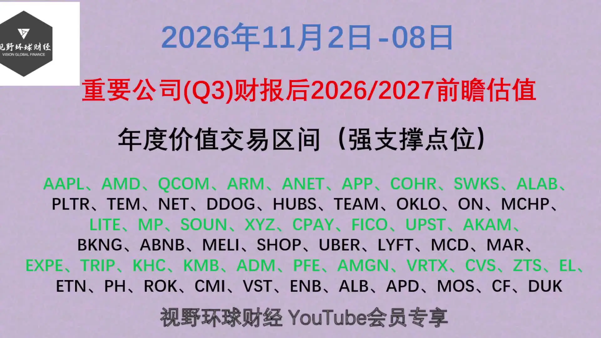放大查看 ↗本期 56 只股票与估值支撑主题原视频 01:00回听此处这期涉及哪些股票与内容？AAPL主讲AAPL 当时约 342 美元，画面最新一行当前财年模型区间约 192.8—289.2 美元、下一财年约 216.8—325.2 美元。市价连下一财年上沿也超过，前期上涨可能有资金转向防御资产的因素，却不能由此推导高位买入仍有足够估值空间AMD主讲AMD 当时约 449 美元，画面最新一行当前财年模型区间约 228.3—304.4 美元、下一财年约 463.8—618.4 美元。当前价格高于本财年区间，按下一财年看则接近下沿QCOM主讲QCOM 当时约 165 美元，表格显示价格在模型区间内；ARM 约 174 美元，即使向下一财年看也接近或超过上沿，我不愿在此追高。ANET 的估值与支撑列在同一组原画面，判断时仍要结合后续订单和数据中心建设节奏ARM主讲QCOM 当时约 165 美元，表格显示价格在模型区间内；ARM 约 174 美元，即使向下一财年看也接近或超过上沿，我不愿在此追高。ANET 的估值与支撑列在同一组原画面，判断时仍要结合后续订单和数据中心建设节奏ANET主讲ANET 的估值与支撑列在同一组原画面，判断时仍要结合后续订单和数据中心建设节奏APP主讲APP 财报后从此前重跌中快速反弹到约 391 美元，回到当前财年模型区间。画面显示下一财年模型区间约 415—622.5 美元，技术压力与均值回归可以同时存在；一轮反弹并不自动证明原有风险全部解除COHR主讲COHR 约 192 美元，图中当前与下一财年的模型区间分别约 288—384、424.5—566 美元。表面上的低估须连同光模块、存储、服务器与数据中心建设的共同需求风险阅读：项目从两年拖到五年，即使总需求不消失，年度利润增速也会改变SWKS主讲SWKS 约 82 美元，处于画面当前财年的模型区间；ALAB 约 190 美元，图示模型仍依赖较高成长预期。两只股票与 ANET、COHR 的价格列、年度模型和支撑列都在原图中，不能仅因某一列显示空间就忽略行业整体可能降速ALAB主讲SWKS 约 82 美元，处于画面当前财年的模型区间；ALAB 约 190 美元，图示模型仍依赖较高成长预期。两只股票与 ANET、COHR 的价格列、年度模型和支撑列都在原图中，不能仅因某一列显示空间就忽略行业整体可能降速PLTR主讲PLTR 继续处于高估状态，价格下行时不能只凭前期高增长叙事推导基本面买点。TEM 的盈利预测从接近零逐步转正，显示基本面向右侧改善；但刚转正与高估值并存，若参与，更多是技术趋势与市场对 AI 应用的定价，而非已经便宜的估值TEM主讲TEM 的盈利预测从接近零逐步转正，显示基本面向右侧改善；但刚转正与高估值并存，若参与，更多是技术趋势与市场对 AI 应用的定价，而非已经便宜的估值NET主讲NET、DDOG 在这组表格里仍高于当前模型范围，基本面估值不提供宽裕安全边际。HUBS 约 200 美元，表面上低于模型下沿，但其业绩兑现速度不快、市场关注度也降低；低估可以长期存在DDOG主讲NET、DDOG 在这组表格里仍高于当前模型范围，基本面估值不提供宽裕安全边际。HUBS 约 200 美元，表面上低于模型下沿，但其业绩兑现速度不快、市场关注度也降低；低估可以长期存在HUBS主讲HUBS 约 200 美元，表面上低于模型下沿，但其业绩兑现速度不快、市场关注度也降低；低估可以长期存在。TEAM 约 153 美元，落在较正常的区间，仍需跟踪趋势TEAM主讲TEAM 约 153 美元，落在较正常的区间，仍需跟踪趋势OKLO主讲OKLO 是把长周期项目炒成短期成长的典型风险。画面中当前财年 EPS 为负，下一财年约负 1.12，市价约 23 美元ON主讲ON 与 MCHP 的表格也需要区分当前与下一财年：ON 以画面最新 EPS 修正为准，MCHP 约 58 美元虽看似低估，但 3 月财年使后一列跨到 2028 年 3 月，中间要经历一整年的需求、审批与预测修正。现在的数据并不保证半年或一年后仍有效MCHP主讲ON 与 MCHP 的表格也需要区分当前与下一财年：ON 以画面最新 EPS 修正为准，MCHP 约 58 美元虽看似低估，但 3 月财年使后一列跨到 2028 年 3 月，中间要经历一整年的需求、审批与预测修正。现在的数据并不保证半年或一年后仍有效LITE主讲LITE 也与数据中心、光通信资本支出有关。即使表上显示模型低估，图中近端主要剩较弱的筹码支撑，技术面至少应先止跌并稳定；等待确认可能错过 V 形反弹，却能避免把持续下行误判为价值回归MP主讲MP 当时约 35 美元，当前 EPS 为负，没有可用的当前财年盈利估值；下一财年画面上沿约 33 美元，仍低于市价。稀土主题的热度无法替代产能、资产负债表和盈利兑现SOUN主讲SOUN 约 4 美元，仍是负 EPS 的 AI 应用案例，价格与业绩都需要重新检验XYZ主讲XYZ 在画面中属于较合理价格，业绩修正尚可，技术面有支撑；支付行业的竞争却非常密集，下一次财报能否维持增长是关键条件。CPAY 约 455 美元，图中当前财年模型区间约 418.3—666.0 美元，下一财年约 479.6—763.5 美元，看似靠近下沿，但同样要承担支付业务和预测修正风CPAY主讲CPAY 约 455 美元，图中当前财年模型区间约 418.3—666.0 美元，下一财年约 479.6—763.5 美元，看似靠近下沿，但同样要承担支付业务和预测修正风险FICO主讲FICO 约 704 美元，画面中的 9 月财年当前 EPS 最新值约 46.77，比前一行 53.51 下调；模型倍数也已从更高区间改为 20—30 倍。不能把旧行的高估值区间当成最新结论UPST主讲UPST 约 21 美元，当前财年 EPS 从 2.87 降至 2.17，下一财年最新约 3.16；价格低于模型下沿，不代表下修趋势已结束AKAM主讲AKAM 约 83 美元，最新一行当前财年模型区间约 107.9—195.3 美元，下一财年约 110.2—199.4 美元；EPS 从早前较高水平逐步降到当前约 6.62，下一财年约 6.76，增长接近停滞。估值折价需要与增长停滞一起看BKNG主讲BKNG 的业绩仍有支撑，但当前和下一财年的预测都在下修；在通胀、利率与油价压力下，可以研究，却不宜把一次低估当成趋势已反转。ABNB 约 189 美元，回撤后仍偏高；MELI 位于较正常估值区间ABNB主讲ABNB 约 189 美元，回撤后仍偏高；MELI 位于较正常估值区间。SHOP 约 148 美元，当前及下一财年仍高估，除非更远年度的增长继续兑现，否则现在买入需要承担过早透支未来的风险MELI主讲ABNB 约 189 美元，回撤后仍偏高；MELI 位于较正常估值区间。SHOP 约 148 美元，当前及下一财年仍高估，除非更远年度的增长继续兑现，否则现在买入需要承担过早透支未来的风险SHOP主讲SHOP 约 148 美元，当前及下一财年仍高估，除非更远年度的增长继续兑现，否则现在买入需要承担过早透支未来的风险UBER主讲UBER 与 LYFT 同属出行平台，若在两者间比较，我更倾向业务规模和成熟度更高的 UBER。LYFT 即使在模型里显低，也未必有同样的经营确定性LYFT主讲UBER 与 LYFT 同属出行平台，若在两者间比较，我更倾向业务规模和成熟度更高的 UBER。LYFT 即使在模型里显低，也未必有同样的经营确定性MCD主讲MCD 处于防御消费领域、增速较慢；机构因持仓要求转向消费股，可能推高价格，但个人账户用股票避险仍要承担市场下跌风险MAR主讲MAR 当时约 416 美元，表中偏高。EXPE 约 259 美元，类似 BKNG，当前模型显得偏低且下一财年仍有增长，可是两家未来 EPS 的下修都已开始EXPE主讲EXPE 约 259 美元，类似 BKNG，当前模型显得偏低且下一财年仍有增长，可是两家未来 EPS 的下修都已开始。TRIP 跌到约 7 美元，盈利和价格趋势都弱TRIP主讲TRIP 跌到约 7 美元，盈利和价格趋势都弱。KHC 约 24 美元处于较合理区间；KMB、ADM 的下一财年衰退预期仍需先看到拐点KHC主讲KHC 约 24 美元处于较合理区间；KMB、ADM 的下一财年衰退预期仍需先看到拐点KMB主讲KMB 当前财年 EPS 约 7.38、下一财年约 7.10，市价约 108 美元；ADM 约 5.64 对 5.59，PFE 约 3.01 对 2.96，也显示下一财年预期低于当前。价格看起来便宜时，要先判断衰退是否见底ADM主讲KMB 当前财年 EPS 约 7.38、下一财年约 7.10，市价约 108 美元；ADM 约 5.64 对 5.59，PFE 约 3.01 对 2.96，也显示下一财年预期低于当前。价格看起来便宜时，要先判断衰退是否见底PFE主讲KMB 当前财年 EPS 约 7.38、下一财年约 7.10，市价约 108 美元；ADM 约 5.64 对 5.59，PFE 约 3.01 对 2.96，也显示下一财年预期低于当前。价格看起来便宜时，要先判断衰退是否见底AMGN主讲AMGN 约 460 美元，画面显示明显高估；VRTX 约 547 美元和 CVS 处于较合理区间。ZTS 和 EL 也落在较正常区间，但具体空间仍要看后续盈利修正VRTX主讲AMGN 约 460 美元，画面显示明显高估；VRTX 约 547 美元和 CVS 处于较合理区间。ZTS 和 EL 也落在较正常区间，但具体空间仍要看后续盈利修正CVS主讲AMGN 约 460 美元，画面显示明显高估；VRTX 约 547 美元和 CVS 处于较合理区间。ZTS 和 EL 也落在较正常区间，但具体空间仍要看后续盈利修正ZTS主讲ZTS 和 EL 也落在较正常区间，但具体空间仍要看后续盈利修正EL主讲ZTS 和 EL 也落在较正常区间，但具体空间仍要看后续盈利修正ETN主讲ETN 约 341 美元，当前财年模型已接近上沿，下一财年的空间也有相当部分被价格提前计入；PH 约 917 美元仍明显高估。ROK 约 375 美元，图中当前财年 EPS 最新约 14.9，下一财年约 16.98，模型区间仍留有空间，是我持续追踪的备选股票，但是否纳入持仓还要等更多数据确PH主讲ETN 约 341 美元，当前财年模型已接近上沿，下一财年的空间也有相当部分被价格提前计入；PH 约 917 美元仍明显高估。ROK 约 375 美元，图中当前财年 EPS 最新约 14.9，下一财年约 16.98，模型区间仍留有空间，是我持续追踪的备选股票，但是否纳入持仓还要等更多数据确ROK主讲ROK 约 375 美元，图中当前财年 EPS 最新约 14.9，下一财年约 16.98，模型区间仍留有空间，是我持续追踪的备选股票，但是否纳入持仓还要等更多数据确认。CMI 约 450 美元，下一财年虽在合理区间，已经消耗不少上行空间CMI主讲CMI 约 450 美元，下一财年虽在合理区间，已经消耗不少上行空间VST主讲VST 约 124 美元，看起来低于模型区间，但当前和下一财年的 EPS 都在下修。电力需求存在，不代表电厂、电网的审批、扩建和收入可以迅速兑现；若把五年建设周期按两年高增长来定价，市场预期变化后股价也会重估ENB主讲ENB 约 46 美元估值较合理，但两个财年的盈利预期同样在下调ALB主讲ALB 当时约 99 美元，在画面模型中偏高；APD 约 304 美元，位置较合理。MOS 约 22 美元也偏高，CF 的下一财年 EPS 则比当前财年明显低APD主讲ALB 当时约 99 美元，在画面模型中偏高；APD 约 304 美元，位置较合理。MOS 约 22 美元也偏高，CF 的下一财年 EPS 则比当前财年明显低MOS主讲MOS 约 22 美元也偏高，CF 的下一财年 EPS 则比当前财年明显低。即使同属化肥或化工，产业链位置不同，原材料价格上涨对利润的作用也可能相反CF主讲CF 的下一财年预期较当前明显回落，化肥业务还受大宗商品和地缘变化牵动DUK主讲DUK 约 127 美元，增长缓慢，公共事业属性明显。大宗商品相关公司还会受到原料、地缘政治和期货价格波动影响；如果对这些驱动因素没有足够研究，仅看历史 PE 倍数容易低估不确定性背景提及：无。市场指标：SPX。背景提及不代表对该股票展开分析。CHAPTER 01 · 回听 00:00先读财年和修正趋势这次更新的是 11 月 2 日至 8 日财报后的 56 只股票，当前财年 EPS 预期中有 33 只上调、23 只下调。表格每只股票保留五行：最后一行是最新预测，前四行用于看修正路径；上调箭头表示相对上次更新的共识数据向上。判断长期投资，不能把题材热度直接当作盈利增长。股票代码后的数字表示财年截止月份，未标注时按 12 月理解。AAPL 后的 9 表示 9 月财年：2026 年 11 月时，表头“26 财年”对应的是 2027 年 9 月结束的当前财年，后列则对应 2028 年 9 月。AMD 等 12 月财年仍按 2026 年 12 月与 2027 年 12 月读。不能把不同公司的表头年份机械当成同一自然年。红色市价表示高于当前财年模型上沿，蓝色表示低于当前财年模型下沿；它们不是买卖指令。粗体的下一财年数据提示 EPS 可能比当前财年更低。模型价值区间、当时市价和最近筹码支撑是三种不同口径，支撑跌破后原位置可能转为压力。OKLO 是把长周期项目炒成短期成长的典型风险。画面中当前财年 EPS 为负，下一财年约负 1.12，市价约 23 美元。核电从审批、建设、运行到收费所需时间很长，居民阻力也不能忽略；题材的短线爆发不代表两年内盈利兑现。KMB 当前财年 EPS 约 7.38、下一财年约 7.10，市价约 108 美元；ADM 约 5.64 对 5.59，PFE 约 3.01 对 2.96，也显示下一财年预期低于当前。价格看起来便宜时，要先判断衰退是否见底。等待 EPS 修正开始向上，可能少买到最底部，但盈利趋势的确定性更高。CF 的下一财年预期较当前明显回落，化肥业务还受大宗商品和地缘变化牵动。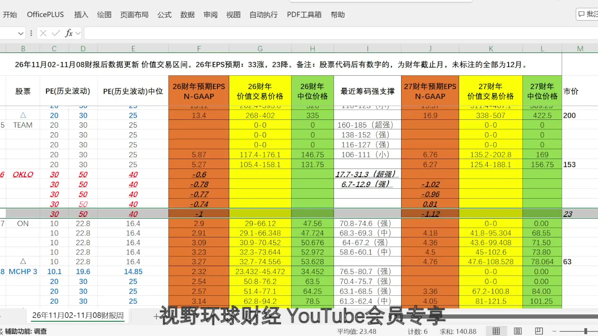放大查看 ↗TEAM / OKLO / ON / MCHP：估值与支撑原画面原视频 05:30回听此处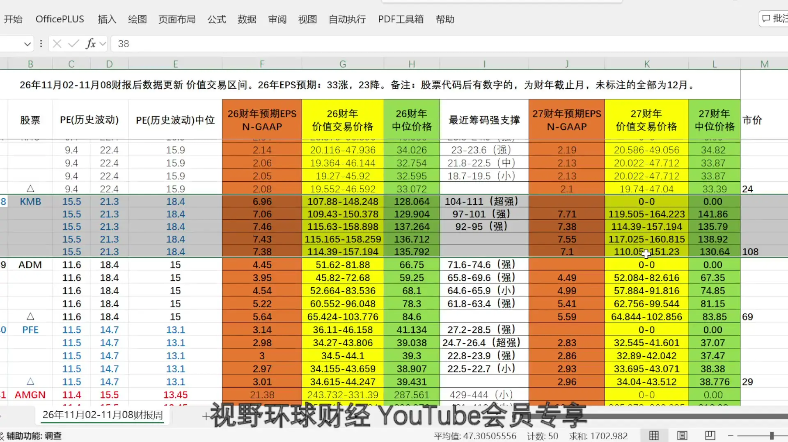放大查看 ↗KMB / ADM / PFE / AMGN：估值与支撑原画面原视频 07:30回听此处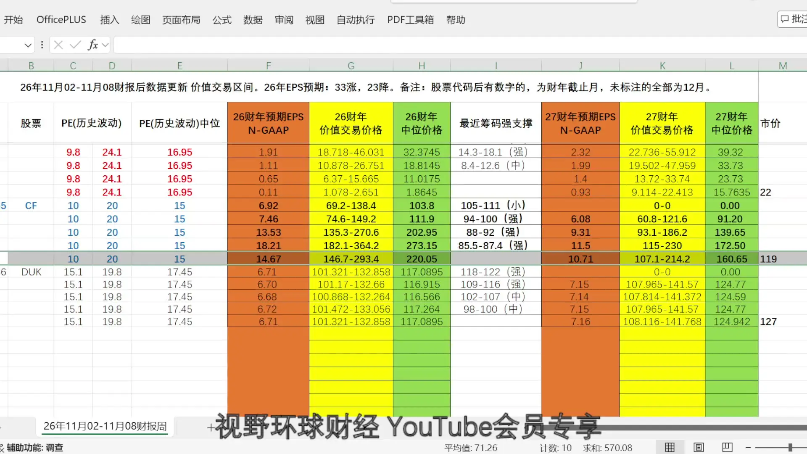放大查看 ↗CF / DUK：估值与支撑原画面原视频 10:30回听此处CHAPTER 02 · 回听 12:00AAPL、AMD 与半导体的时间差AAPL 当时约 342 美元，画面最新一行当前财年模型区间约 192.8—289.2 美元、下一财年约 216.8—325.2 美元。市价连下一财年上沿也超过，前期上涨可能有资金转向防御资产的因素，却不能由此推导高位买入仍有足够估值空间。现金、货币基金或短期国债也可以承担个人避险需求，具体收益条件应以账户规则为准。AMD 当时约 449 美元，画面最新一行当前财年模型区间约 228.3—304.4 美元、下一财年约 463.8—618.4 美元。当前价格高于本财年区间，按下一财年看则接近下沿。这里的关键不是只看 618.4 的上限，而是下一财年的 EPS 和估值倍数能否维持。数据中心审批放缓与已获批、在建项目要分开看。我的推演是，2027 年容量中许多项目已动工，新增审批的变化更可能从 2028 年项目开始影响建设节奏；这不等于 2027 年半导体订单已经确定受损。若 2028 年开工减少，大科技在 2027 年初给出的未来资本支出指引可能低于市场对增速的预期，半导体卖方预测还需要时间调整。高增长预期下降时，市场可能先压低 PE，随后 EPS 预测再下修，形成两个乘数同时下调的风险。增速从 30% 降至 15%、降至 5%，以及转为零或负增长，对估值和大盘的含义完全不同。正常降速与增长逻辑彻底破坏不能混为一谈；四季度冲高与次年一季度指引是重仓半导体需要观察的窗口。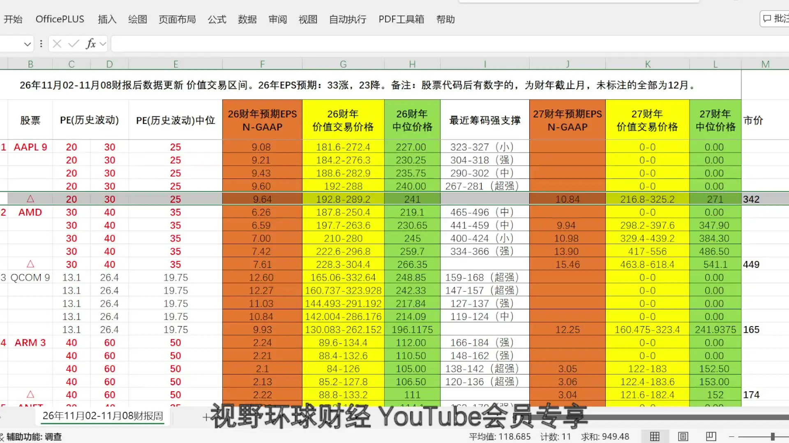放大查看 ↗AAPL / AMD / QCOM / ARM：估值与支撑原画面原视频 03:00回听此处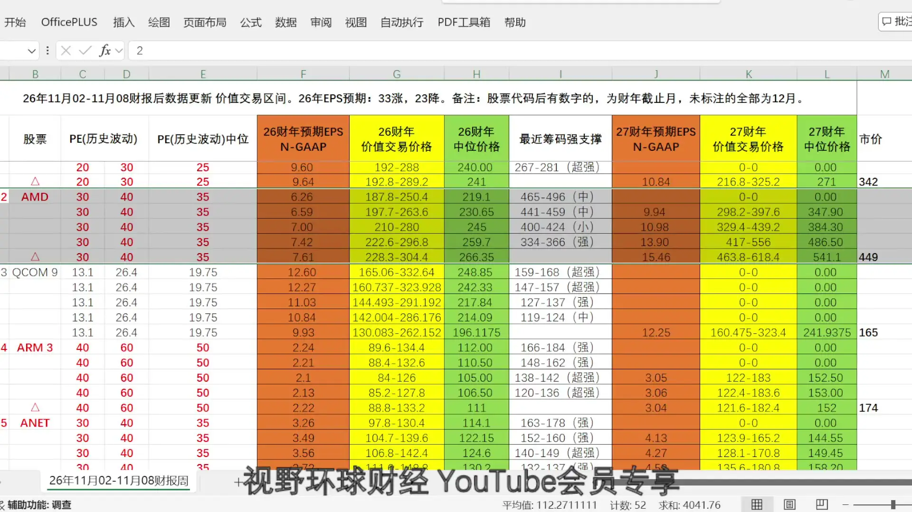放大查看 ↗AMD / QCOM / ARM / ANET：估值与支撑原画面原视频 13:30回听此处CHAPTER 03 · 回听 20:00网络、光通信和热门应用QCOM 当时约 165 美元，表格显示价格在模型区间内；ARM 约 174 美元，即使向下一财年看也接近或超过上沿，我不愿在此追高。ANET 的估值与支撑列在同一组原画面，判断时仍要结合后续订单和数据中心建设节奏。APP 财报后从此前重跌中快速反弹到约 391 美元，回到当前财年模型区间。画面显示下一财年模型区间约 415—622.5 美元，技术压力与均值回归可以同时存在；一轮反弹并不自动证明原有风险全部解除。COHR 约 192 美元，图中当前与下一财年的模型区间分别约 288—384、424.5—566 美元。表面上的低估须连同光模块、存储、服务器与数据中心建设的共同需求风险阅读：项目从两年拖到五年，即使总需求不消失，年度利润增速也会改变。市场可能先给较低 PE，再等待 EPS 调整。SWKS 约 82 美元，处于画面当前财年的模型区间；ALAB 约 190 美元，图示模型仍依赖较高成长预期。两只股票与 ANET、COHR 的价格列、年度模型和支撑列都在原图中，不能仅因某一列显示空间就忽略行业整体可能降速。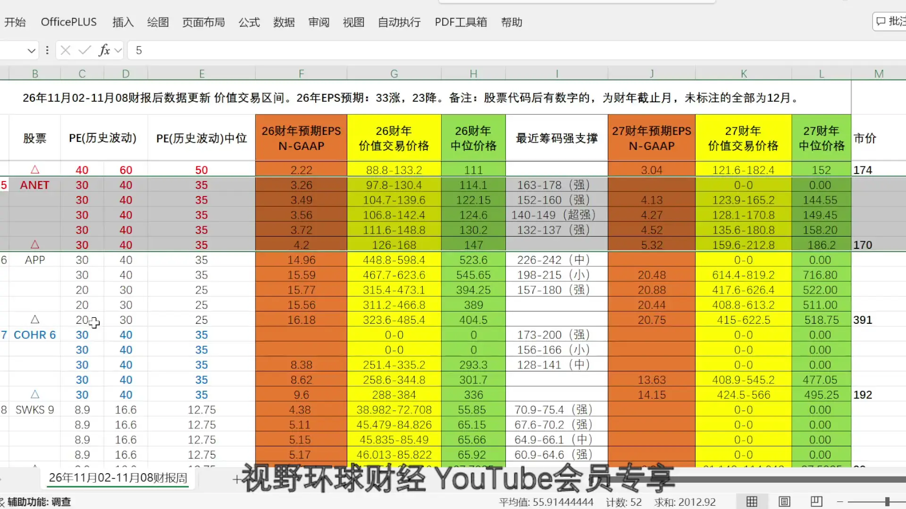放大查看 ↗ANET / APP / COHR / SWKS：估值与支撑原画面原视频 20:30回听此处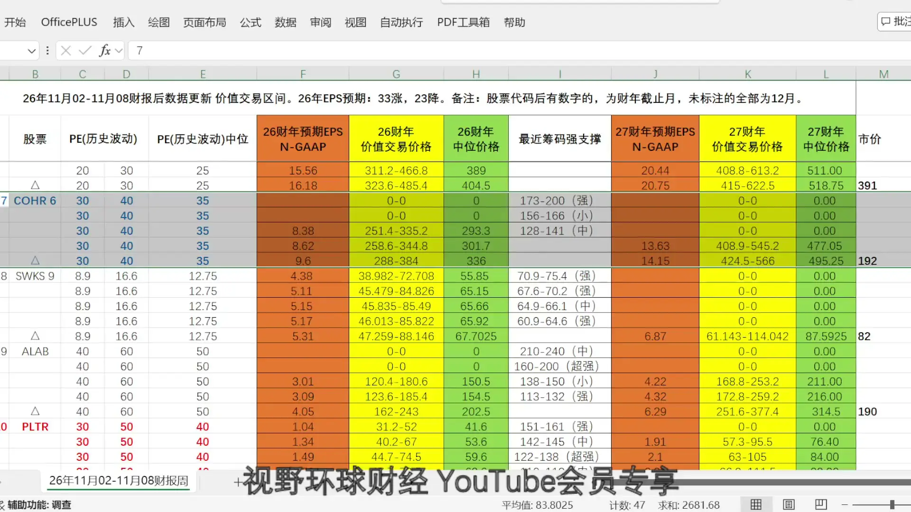放大查看 ↗COHR / SWKS / ALAB / PLTR：估值与支撑原画面原视频 21:30回听此处CHAPTER 04 · 回听 23:20PLTR 到 OKLO：估值与盈利兑现PLTR 继续处于高估状态，价格下行时不能只凭前期高增长叙事推导基本面买点。TEM 的盈利预测从接近零逐步转正，显示基本面向右侧改善；但刚转正与高估值并存，若参与，更多是技术趋势与市场对 AI 应用的定价，而非已经便宜的估值。NET、DDOG 在这组表格里仍高于当前模型范围，基本面估值不提供宽裕安全边际。HUBS 约 200 美元，表面上低于模型下沿，但其业绩兑现速度不快、市场关注度也降低；低估可以长期存在。TEAM 约 153 美元，落在较正常的区间，仍需跟踪趋势。OKLO 不能把遥远的核电需求直接折算为眼前利润。ON 与 MCHP 的表格也需要区分当前与下一财年：ON 以画面最新 EPS 修正为准，MCHP 约 58 美元虽看似低估，但 3 月财年使后一列跨到 2028 年 3 月，中间要经历一整年的需求、审批与预测修正。现在的数据并不保证半年或一年后仍有效。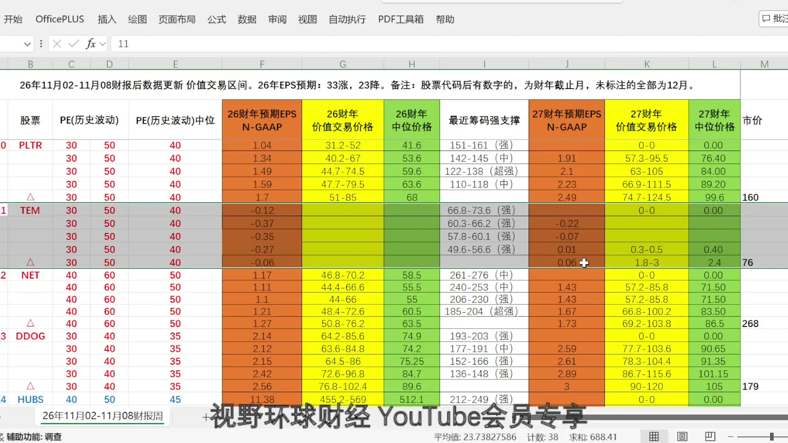放大查看 ↗PLTR / TEM / NET / DDOG / HUBS：估值与支撑原画面原视频 24:00回听此处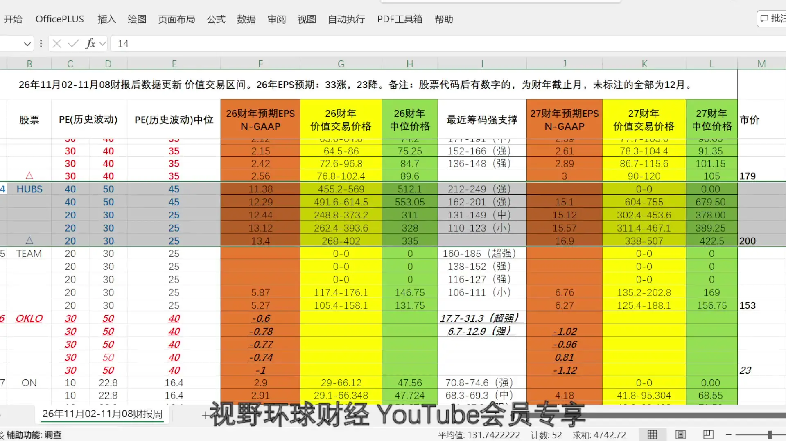放大查看 ↗HUBS / TEAM / OKLO / ON：估值与支撑原画面原视频 26:00回听此处CHAPTER 05 · 回听 27:00半导体链条、稀土与 AI 语音LITE 也与数据中心、光通信资本支出有关。即使表上显示模型低估，图中近端主要剩较弱的筹码支撑，技术面至少应先止跌并稳定；等待确认可能错过 V 形反弹，却能避免把持续下行误判为价值回归。MP 当时约 35 美元，当前 EPS 为负，没有可用的当前财年盈利估值；下一财年画面上沿约 33 美元，仍低于市价。稀土主题的热度无法替代产能、资产负债表和盈利兑现。SOUN 约 4 美元，仍是负 EPS 的 AI 应用案例，价格与业绩都需要重新检验。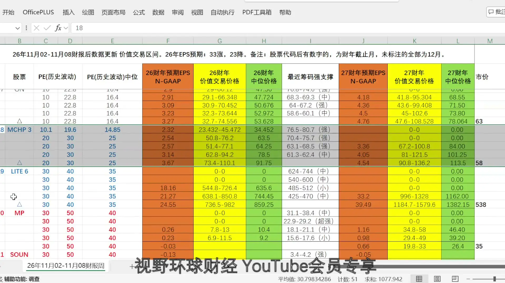放大查看 ↗MCHP / LITE / MP / SOUN：估值与支撑原画面原视频 27:30回听此处CHAPTER 06 · 回听 30:00支付、信贷与软件：低估的不同原因XYZ 在画面中属于较合理价格，业绩修正尚可，技术面有支撑；支付行业的竞争却非常密集，下一次财报能否维持增长是关键条件。CPAY 约 455 美元，图中当前财年模型区间约 418.3—666.0 美元，下一财年约 479.6—763.5 美元，看似靠近下沿，但同样要承担支付业务和预测修正风险。FICO 约 704 美元，画面中的 9 月财年当前 EPS 最新值约 46.77，比前一行 53.51 下调；模型倍数也已从更高区间改为 20—30 倍。不能把旧行的高估值区间当成最新结论。UPST 约 21 美元，当前财年 EPS 从 2.87 降至 2.17，下一财年最新约 3.16；价格低于模型下沿，不代表下修趋势已结束。AKAM 约 83 美元，最新一行当前财年模型区间约 107.9—195.3 美元，下一财年约 110.2—199.4 美元；EPS 从早前较高水平逐步降到当前约 6.62，下一财年约 6.76，增长接近停滞。估值折价需要与增长停滞一起看。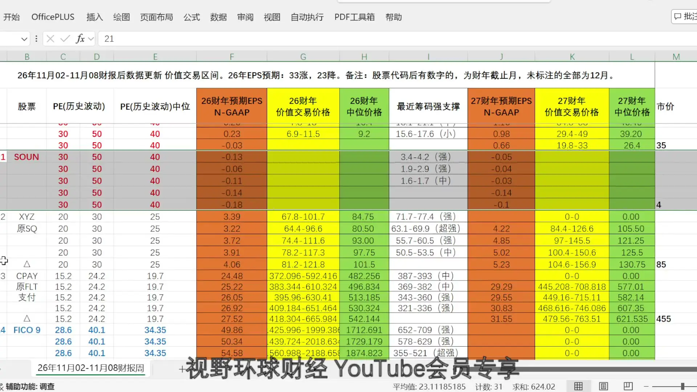放大查看 ↗SOUN / XYZ / CPAY / FICO：估值与支撑原画面原视频 30:30回听此处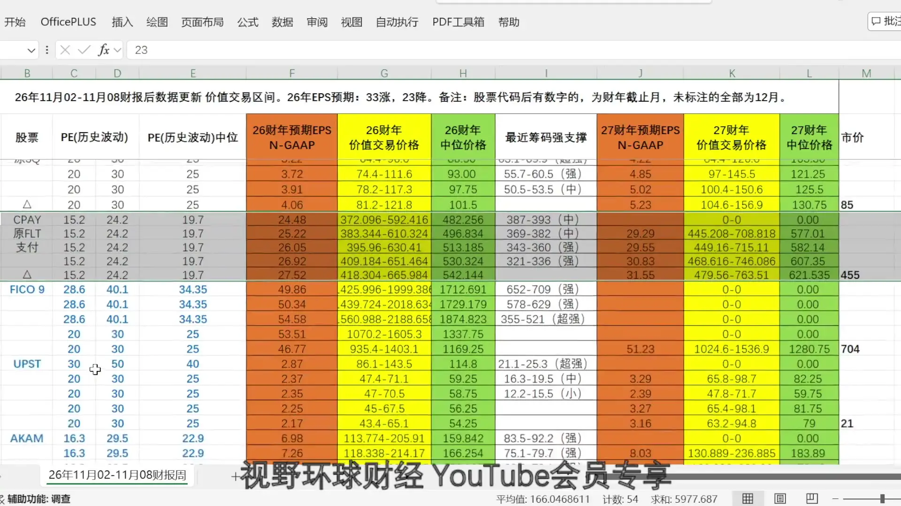放大查看 ↗CPAY / FICO / UPST / AKAM：估值与支撑原画面原视频 32:30回听此处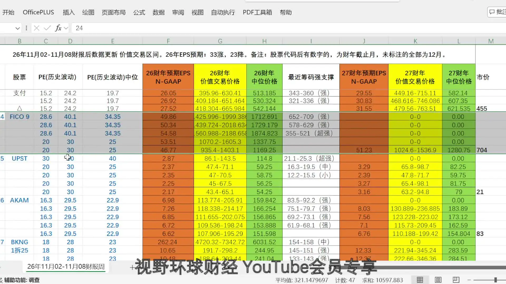放大查看 ↗AKAM：估值与支撑原画面原视频 33:20回听此处CHAPTER 07 · 回听 33:40出行、电商与消费者的钱袋子BKNG 的业绩仍有支撑，但当前和下一财年的预测都在下修；在通胀、利率与油价压力下，可以研究，却不宜把一次低估当成趋势已反转。ABNB 约 189 美元，回撤后仍偏高；MELI 位于较正常估值区间。SHOP 约 148 美元，当前及下一财年仍高估，除非更远年度的增长继续兑现，否则现在买入需要承担过早透支未来的风险。UBER 与 LYFT 同属出行平台，若在两者间比较，我更倾向业务规模和成熟度更高的 UBER。LYFT 即使在模型里显低，也未必有同样的经营确定性。MCD 处于防御消费领域、增速较慢；机构因持仓要求转向消费股，可能推高价格，但个人账户用股票避险仍要承担市场下跌风险。MAR 当时约 416 美元，表中偏高。EXPE 约 259 美元，类似 BKNG，当前模型显得偏低且下一财年仍有增长，可是两家未来 EPS 的下修都已开始。TRIP 跌到约 7 美元，盈利和价格趋势都弱。KHC 约 24 美元处于较合理区间；KMB、ADM 的下一财年衰退预期仍需先看到拐点。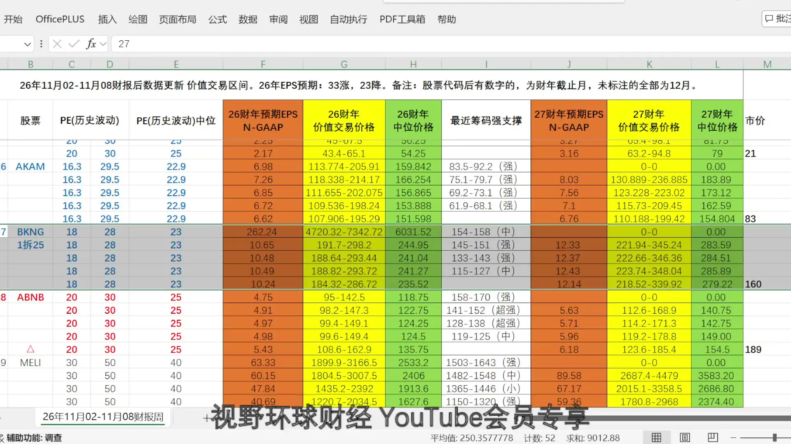放大查看 ↗BKNG / ABNB / MELI：估值与支撑原画面原视频 34:30回听此处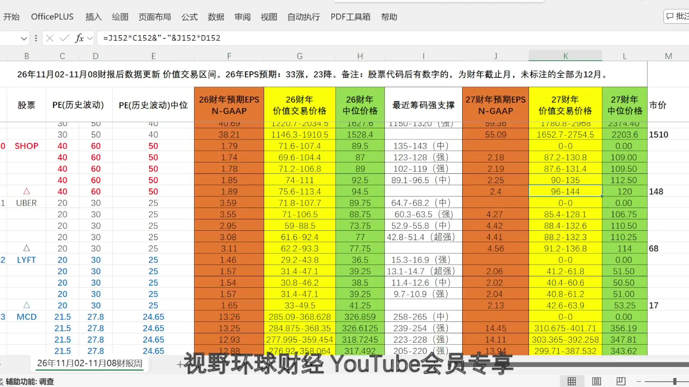放大查看 ↗SHOP / UBER / LYFT / MCD：估值与支撑原画面原视频 36:30回听此处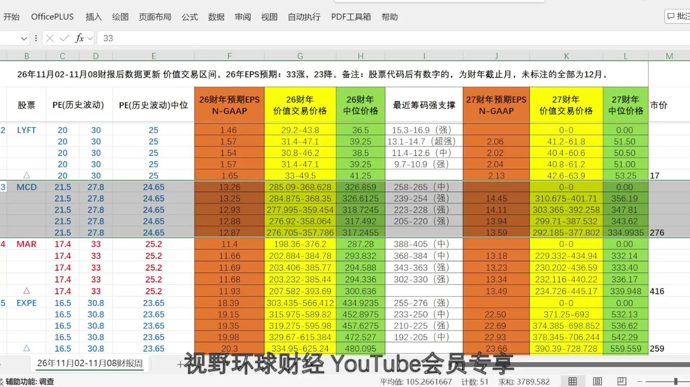放大查看 ↗LYFT / MCD / MAR / EXPE：估值与支撑原画面原视频 38:30回听此处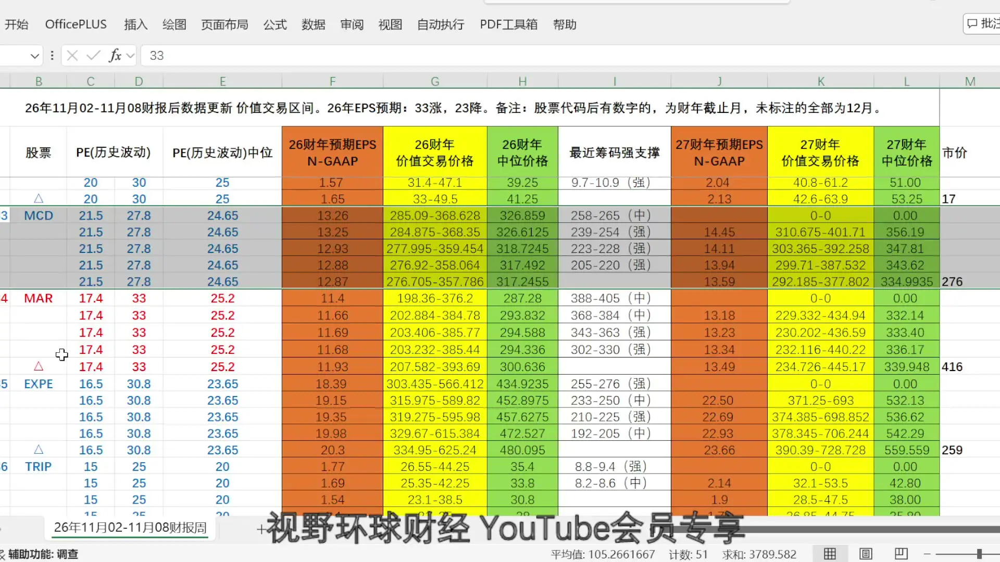放大查看 ↗MCD / MAR / EXPE / TRIP：估值与支撑原画面原视频 40:30回听此处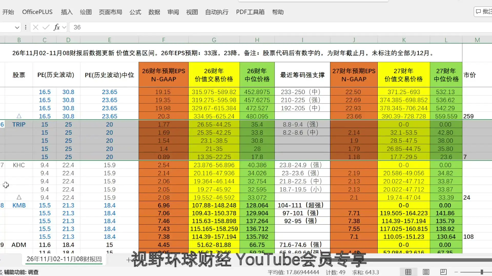放大查看 ↗TRIP / KHC / KMB / ADM：估值与支撑原画面原视频 41:30回听此处CHAPTER 08 · 回听 41:40医疗与消费防御：攻守并非一样PFE 当前约 29 美元、表面低估，但下一财年 EPS 约 2.96 低于当前约 3.01，盈利调整还没有结束。AMGN 约 460 美元，画面显示明显高估；VRTX 约 547 美元和 CVS 处于较合理区间。ZTS 和 EL 也落在较正常区间，但具体空间仍要看后续盈利修正。医疗保健同时有高成长公司和稳定型医药公司，机构在其他板块承压时可能把它当作过渡仓位；消费防御则通常增长较慢。机构相对基准少跌也可能被称为跑赢，个人账户却仍会亏损，两个目标不能混淆。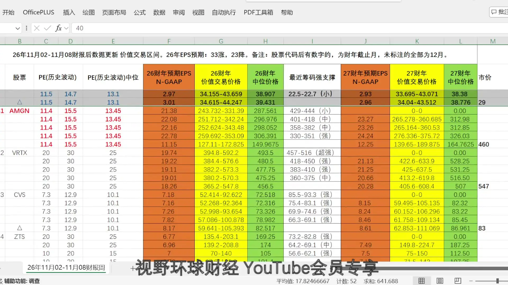放大查看 ↗AMGN / VRTX / CVS / ZTS：估值与支撑原画面原视频 42:00回听此处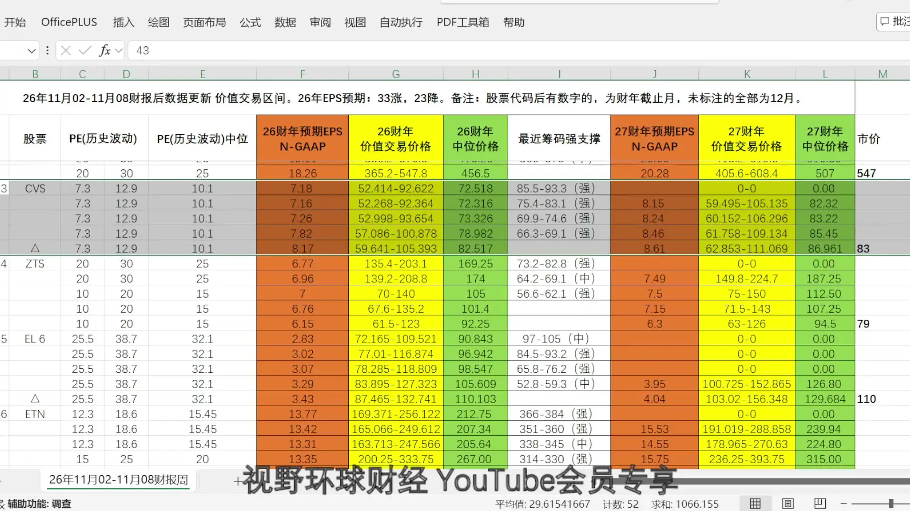放大查看 ↗CVS / ZTS / EL / ETN：估值与支撑原画面原视频 43:00回听此处CHAPTER 09 · 回听 43:00工业、公共事业与盈利兑现周期ETN 约 341 美元，当前财年模型已接近上沿，下一财年的空间也有相当部分被价格提前计入；PH 约 917 美元仍明显高估。ROK 约 375 美元，图中当前财年 EPS 最新约 14.9，下一财年约 16.98，模型区间仍留有空间，是我持续追踪的备选股票，但是否纳入持仓还要等更多数据确认。CMI 约 450 美元，下一财年虽在合理区间，已经消耗不少上行空间。VST 约 124 美元，看起来低于模型区间，但当前和下一财年的 EPS 都在下修。电力需求存在，不代表电厂、电网的审批、扩建和收入可以迅速兑现；若把五年建设周期按两年高增长来定价，市场预期变化后股价也会重估。ENB 约 46 美元估值较合理，但两个财年的盈利预期同样在下调。公共事业与地产信托更适合按长期现金流、股息及利率环境判断。若利率尚未见顶、又期待一年内大幅股价增长，就要格外谨慎；若主要目标是多年持有并获取股息，评估方式可以不同。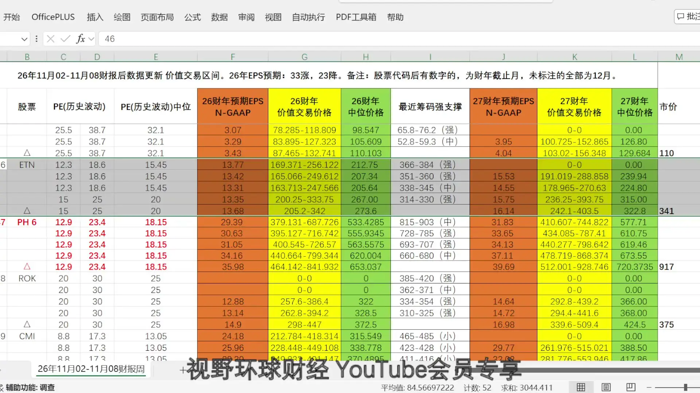放大查看 ↗ETN / PH / ROK / CMI：估值与支撑原画面原视频 43:30回听此处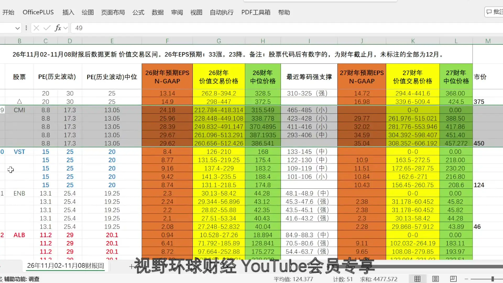放大查看 ↗CMI / VST / ENB / ALB：估值与支撑原画面原视频 44:30回听此处CHAPTER 10 · 回听 45:30化工与大宗商品：倍数之外还有成本ALB 当时约 99 美元，在画面模型中偏高；APD 约 304 美元，位置较合理。MOS 约 22 美元也偏高，CF 的下一财年 EPS 则比当前财年明显低。即使同属化肥或化工，产业链位置不同，原材料价格上涨对利润的作用也可能相反。DUK 约 127 美元，增长缓慢，公共事业属性明显。大宗商品相关公司还会受到原料、地缘政治和期货价格波动影响；如果对这些驱动因素没有足够研究，仅看历史 PE 倍数容易低估不确定性。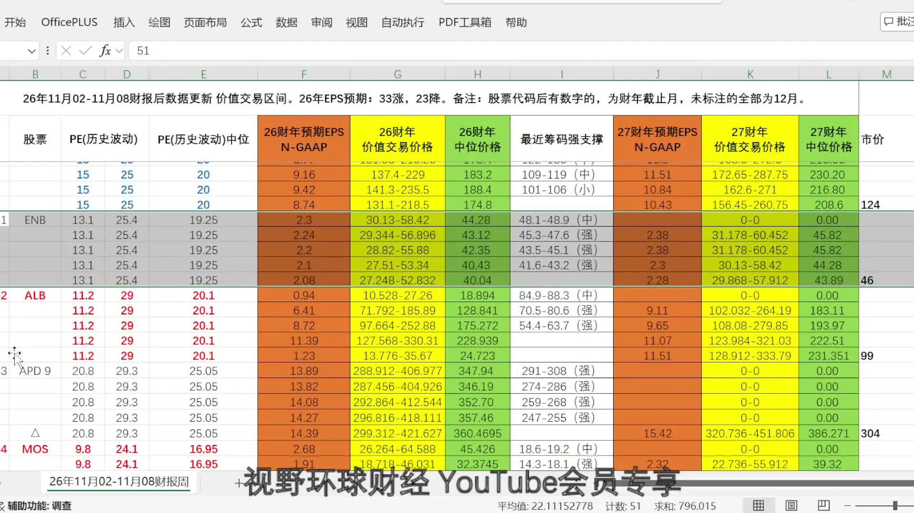放大查看 ↗ENB / ALB / APD / MOS：估值与支撑原画面原视频 47:30回听此处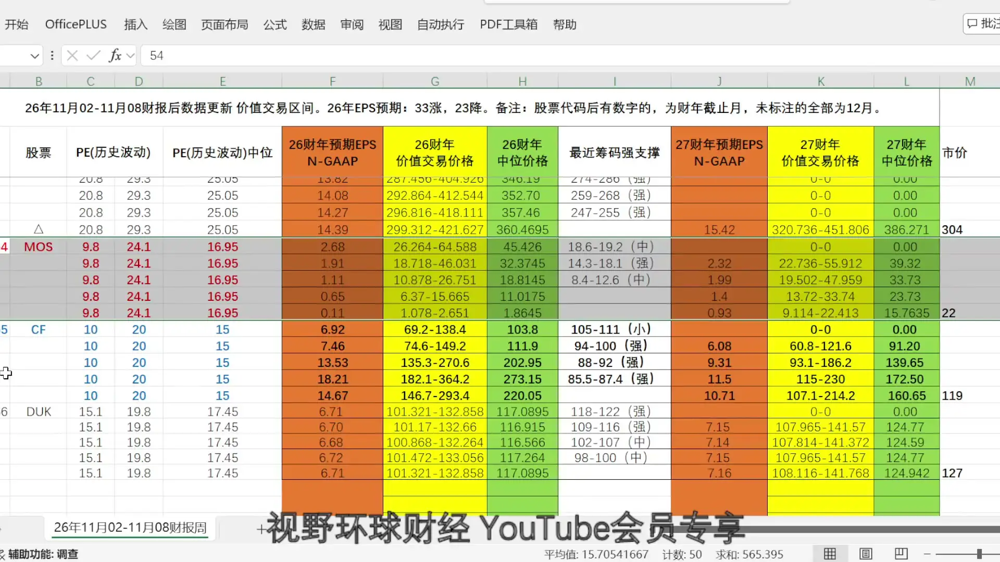放大查看 ↗MOS / CF / DUK：估值与支撑原画面原视频 48:00回听此处CHAPTER 11 · 回听 49:20接下来观察什么：证据与仓位同步调整本期部分筹码支撑是在周四前后更新，随后个别股票已跌破原位置，表里尚有未同步移位的地方。已经跌破的支撑不能继续按“下方支撑”使用，应重新看下一档，必要时等待更新。EPS 是录制前新整理的数据，但卖方对数据中心审批变化的修正可能还要经过一段时间。半导体若从高增长缓慢降速，与整体进入盈利衰退，影响并不一样。标普的盈利增长与半导体表现相关，若半导体增速下调超预期，风险可能从板块扩散到指数；但现在仍要区分这种推演与已确认的数据。原先讨论的标普区间约 7000—8500 点，三季度数据更新后还需要重新计算。我的方式是随证据调整仓位，不提前把市场定为必然泡沫或必然继续上涨。若认为全市场盈利衰退已经确定，持有任何股票都仍是承担风险；若证据尚未充分，控制仓位、避免追高，等盈利修正和价格趋势给出更多确认。提前退出可能避开下跌，也可能错过继续上行的阶段，二者都是真实代价。SOURCE MATERIAL完整转录与回听原视频：（会员第309期）2026年11月2日-8日，重要公司Q3财报后2026、2027前瞻估值，强支撑点位！机器原稿可能含同音字与数字单位错误，保留用于对照。播放00:0056:031×1.25×1.5×2×静音展开完整转录下载 TXT ↗下载 SRT ↗查找转录内容00:00本期咱们接着来讲关于本周的一个数据。00:08那么最近的数据从上个星期开始到这个星期都比较多,那么这一期里面也是很多的都是科技股,包括有一些是大家曾经关注的比较多的一些散户的热炒的概念股。00:22咱们经过了这么长时间,再来看一看他们最近的表现到底如何。00:27通过了解这些表格,我们一直在讲,做这个表格的目的是为了让大家了解趋势。00:34这只股票到底是不是增长的,它到底是不是合理的,它的价格到底是和市价相比,和它的估值相比是高了还是低了,趋势怎么样。00:44通过这种表格更好地去把握一个长线投资,不要通过大家比方说情绪上的一些猜测、推测,感觉这个主题怎么样。00:56那以这种方式是不太容易获得真正的本质逻辑的。01:01更多的是在通过数据上,你要了解到,那感觉是感觉,数据是数据。01:07有的本来就是属于题材炒作,它波段炒完,它就结束了。01:11它可能很长时间这个波段都不会再起来,它这个题材也不会再起来。01:16有一些它是实实在在的,一直是一个长线逻辑在运行的。01:20所以我们这个表格系列,数据系列也是为了大家更好的知道,它的一个业绩的调整趋势,增长趋势,包括市价的高低。01:31让大家尽量少踩坑,特别是从长期投资上,要做到规避一些风险。01:39即便你要去参加,所谓的投机也好,炒作也好,题材也好,你要清楚的知道你在做什么。01:47千万不要把炒题材,炒热点,炒热度,当成炒长线,那个是很要命的。01:52因为当,经常投资圈里会说一句话嘛,对吧,炒水退去的时候,你就知道谁在裸泳。01:59那经过这么长时间,其实很多的股票,它是不是在裸泳?02:04大家现在已经很清楚了,对吧,这和我们之前很多时候讲的通过数据系列,已经很清楚地告诉大家。02:11大家如果真的能再把它回去再看一遍,你会发现,大多数的,我们说不行的,在裸泳的股票实际上已经证明了,它不仅是裸了,对吧,它可能都已经被拍在沙滩上,都埋在沙滩底下去了。02:25好,通过这些股票的讲解,希望大家能够更好的去理解整个的市场发展趋势。02:30好,那咱们直接开始今天的主题,首先我们来看一下在表头部分,因为可能有新的会员朋友加进来,我简单的介绍一下,那么这里面有33涨,23降,什么意思呢?02:4426年EPS,凡是上涨的部分,我这里会打着一个向上的箭头,每一个股票有五行数据,最新的数据更新在第五行,就现在我所指的这一行。02:55那么前面的四行是什么意思呢?是我们前面四个季度更新的26年的EPS的情况,或者叫当前财年的EPS的情况。03:04那么这个9.64和我们上次更新相比,它整个的共识数据,包括整个的市场上调了。03:14那么我就打着一个向上的箭头,就代表着市场的趋势在向好发展,而不是向坏发展。03:21它的整个的业绩基本面上,市场最大的看法上是更乐观了,还是更悲观了。03:26好,所以每个只看第五行最新数据,但是你可以对比看前面的这个趋势。03:32那么这个26年指的是当前财年啊,怎么去算这个财年呢?03:36比方说苹果,后面写的数字9,就指的是苹果是9月份财年截止。03:41可是现在都26年11月了,对吧?9月份早就截止了,怎么看呢?03:44那这个就代表着27年9月的自然力,这个财年。03:50就是当前财年,它是27年9月,后面它这个27年的这个数据,实际上它指的是28年9月份的财年的这个数据。03:59但是后面像这种AMD,没有写时间的,那12月截止,它目前这个26仍旧是26年12月份的数据。04:08所以你以这个来区分哈。04:10好,那红的蓝的,红的意思呢,是高估市价和现在的前瞻估值的这个上限去比。04:18就是市价和现在的前瞻估值,当前财年的前瞻估值上限比,如果高了,我前面会标中红色。04:26如果比当前财年的前瞻估值的下限低,我会标中蓝色。04:30这个我们等会来讲。04:33好,我们首先来看一种数据,就是有标粗体的。04:38我给大家先看一下,就是后面数据部分是粗的。04:43比如说像这种。04:46好,比如说这种数据啊,你看这个OKLO的这个数据啊,这个OKLO的这个数据呢,是它什么情况呢?04:54它现在当前财年,它是负一,对不对?04:58那下个财年是什么?负1.12。05:01也就意味着下个财年一旦比当前财年的业绩更低,啊,比方说数值更低的。05:07它两年都是衰退,但明年衰退的更多,对吧?05:10数值负数嘛,更大嘛,对吧?05:12它衰退的更多。05:13这种情况就标成了粗体。05:16就代表着这个业绩非常的不好,啊,市场呢,认为明年会更差。05:21所以,你看OKLO在之前曾经在人工智能,对吧?05:26电力需求旺盛。05:27核电炒作的时候,多爆炸,多火爆,那现在市价只有23块钱了,啊,市价只有23块钱了。05:34如果你不幸在很高的位置一直在做它,很一时仍旧保持着很强有力的信心,仍旧信任它是未来。05:43我们一直在讲核电的问题,它不是一个简单问题,它是需要较长的周期去做的。05:50它比数据中心的这个反对啊,就是居民反对核电比反对数据中心还要强烈。05:57所以,它们从审批到建立,到运行,到交付,到收钱,这个周期无比之长。06:04那么你在那么高的价位,就要去追它一个无比长的未来很多朋友,你说你在追的是什么呢?06:10明显当时就是一个投机炒作,一个话题性的炒作,炒完了就炒完了,对吧?06:16炒完了你就知道它要裸奔了,如果你一直相信它,那你就属于什么呢?06:21错误的判断了市场的炒作,你把短线炒作当成了长期,这个是没有任何意义的,好吧?06:30所以,这只股票我们一直拿出来当负面案例在讲,那现在也证明,它确实是不仅在裸奔,而且已经被拍在了沙滩上,已经被埋在了沙滩底下。06:40很不幸啊,当然也很残酷啊,好,那还有其他的,我们再来看一下衰退型的,先把衰退型的讲完啊。06:50好,这个KMB,这个呢,属于衰退型的,衰退型的,它的财年呢,下个财年是7.38,下个财年7.1,本财年是7.38,对吧?07:02大家看一下,所以,属于衰退型啊,市价是108,但是呢,你好像觉得,哎,在这不是低估了吗?07:10低估了,是有原因的嘛,对吧?它现在还在衰退,衰退都还没走完,所以呢,整个的业绩今年也在往下调,明显业绩不佳,那这种股票你就不用看了,直接把它跳过去就好了,对吧?07:22你就不用去做,所有衰退型的股票,不要去做啊,尽管,它的明年108,看上去也是低估的,放到27年,07:31但是这种情况,它的增速很慢啊,它还在衰退过程中都没走完,估值会越来越低,对吧?07:37你要等它触底,估值触底,才有上调,才有上调,那么才有估值的上调,那么大家才有炒作的动力嘛,那不然现在大家去做它干嘛呢?07:47所以,你就别去做啊,好,ADM也是这样的情况,我们看一下,市价69,看起来呢,接近低估,但明年是不是衰退预期啊,对吧?08:01你看一下这个价格,明年是5.59,今年是5.64,那很明显衰退预期,那这样的你也别碰了,对吧?08:09直接就把它跳过去就好了,因为它的衰退的这个还没有结束啊,所以大家就不要去这个,这个去做这样的股票了08:17好,辉瑞08:20辉瑞呢,是29块钱的价格,看上去是标成蓝色了,低估,对吧?08:27但它也是衰退预期,啊,今年3.01,明年2.9608:31呃,这个衰退呢,其实上一次我们更新的时候,它就已经是衰退了,那这一次继续衰退啊,所以它的价格看上去低估也是有原因的,好吧?08:40也是呢,业绩需要调整较长一段时间,所以凡是衰退的股票,在你没有看到明年的这个业绩开始提升,上涨趋势性的往上走之前呢,最好是不碰08:52大家会说,那等它上调的时候不就晚了吗?是的,上调的时候价格可能早已有反应,因为机构的数据会比你早,但是它在没上调之前,你怎么知道它就上调结束了呢?09:04那么,既然上调开始了,它低估了,就算涨了一点,你是不是至少你能确定它的业绩出底了呀?09:10你买的价位是高了,但你的确定性是不是也更高了呀?09:14对吧,只要它没有说一口气跑到很高的位置去,你是不是仍旧有空间呢?09:19所以,我们这种散户呢,咱们作为散户来讲,数据能拿到,拿到数据有滞后性,这是没有办法的09:26即便机构,它也不是每一个机构,它都是那么超前的,对吧?09:31因为数据,大家其实在市场上流动,总会有先有后有变化嘛09:34我这里呢,已经尽量的给大家再更新比较新的东西09:38包括我能够通过一些机构看到的一些大家可能看不到的东西09:42我拿出来给大家讲一讲,对吧?09:45就是希望能够尽量的把这个信息差,中间的这个差距给大家缩小09:50但我仍旧做不到百分之百的是一线的所有的数据09:54那我有的东西我也不能够拿得到,对吧?09:56因为它不是公开数据09:57哪怕你付费了,拿到了最好的数据源,你也拿不到10:01因为它是它的内部共享数据10:03那是人家的商业秘密10:04做不到的不可能给你的,对吧?10:06所以呢,我只能说把已经有的大多数人还没有看到的东西10:11我尽量先告诉咱们大家,对吧?10:14包括在货源频道里面先告诉大家10:15那这种情况呢,帮助大家减少这个获取信息的难度和信息差10:20对吧?10:20但是仍旧做不到百分之百啊10:22所以我们只能做一个大概,好吧?10:24请大家也理解哈10:25好,然后呢,还有我们再看一下啊10:29还有个CF啊10:30这个也是属于衰退的比较厉害的了10:32大家可以看一下啊10:33我们可以看一下啊10:34这个衰退的这个厉害的就是10点10:37呃,就是呃,这个今年是14.67吧10:41明年是10.7吧10:43这是属于大衰退啊10:44这属于这个呃,之前曾经有过利好的10:47但是呢,慢慢的呢,它就业绩在下调10:50这个跟国际的大宗商品,我们讲过对吧10:52化工啊,包括和中东啊,都已经有关系的10:56所以,凡是你做什么大宗商品10:58它的原材料,呃,受到大宗商品的这个波动11:02很大的11:03那这样的股票呢11:05它的确定性都不太高11:07不太高11:08你除非你对某一类趋势11:10比如说对战争趋势11:11政治的发展前景11:13啊,地缘政治,包括对某一类的大宗商品11:16有强烈的,非常好的研究11:18那么你可以去11:19做相应的东西11:20但对我来讲11:21像什么农业产品啊11:23化肥啊,呃,这个11:25一些石油,石油啊11:27矿石啊11:28这些东西它都是大宗11:30大宗这个东西11:32价格一直在波动11:33它的主战场是在期货市场11:35啊,所以你11:37做现货呢11:38又没有办法直接做它的大宗11:39然后呢,你又做了一个它的公司11:43在用这个大宗作为原料的公司11:45那你其实承受的波动就更大了11:48对不对11:49所以11:49尽管我们说所有的公司都有原材料的问题11:53但有的是直接关联大宗11:55它可能90%的11:5790,95,99的东西都和大宗商品11:59直接相关12:01某一种大宗商品直接相关12:02那它受到的成本影响12:04利润的影响都非常大啊12:06所以这样的不好做12:06不好做咱们就不做12:08对吧,就降低自己的投资难度12:10好12:12那这个呢,是咱们说12:14现在的这个几个衰退型的啊12:18接下来我们看一下12:18从头开始讲吧12:19给大家说一下12:20首先我们说一下苹果啊12:22苹果的市价呢12:24是34212:25这是一个很明显的高估12:27好吧12:27放到明年来看呢12:29它其实也是比较高的12:31明年的上限是32512:33其实也高了12:34这种情况12:35你要去追它呢12:36说实话实在下不了手12:38很多人说那它涨得很好呀12:40那它作为一个资金避险的港湾12:42涨得好不就行了吗12:43涨得好不是一直都是涨得好的12:46它涨的逻辑是短期的12:49不代表你在这个高位去买了12:51它还可以一直涨12:53对吧12:53你要避险12:54你拿的现金避险不挺好吗12:56你放到货币基金避险不也行吗12:58你把它买成短期国债也可以13:00对吧13:01你把它甚至放到券商账户里13:03只要你满足券商账户的某一些条件13:05那你也可以拿到这个利息啊13:09你都不需要做任何事情13:10现金账户放到里面就有利息13:11对吧13:12那现在算起来很多的券商的现金账户13:14有一些这种13:16它也有差不多三到四个点的这个利息啊13:19现金在里面它都有13:20它都是有的13:21没有问题的啊13:22当然是满足一些条件才行啊13:23不是所有的人放到里面都有13:24这个你要咨询一下你的券商好吧13:26好13:28高估的尽量就别追啊13:30我还是那句话13:31好我们来看一下AMD13:32AMD的情况呢13:34是44913:36我们仍旧以40倍来估算13:38今年304的上限肯定是高的13:40对吧13:41明年61813:42看上去是不高的13:43较低13:44风险在哪里13:45风险就在13:46现在由于数据中心整体放缓啊13:49我正好跟大家讲一下13:50数据中心这件事情呢13:53现在情况是这样的13:54呃13:55现在呢13:56放缓的是有这个需求13:57但是主要影响的是什么时候呢14:00目前27年的14:02再见的数据中心14:03它其实是不会受影响14:05那么就是已经27年14:0727年的这个容量啊14:09大多数其实已经破读动工14:10再见的14:10它不会受影响14:11因为那个审批已经审批完了14:12它要暂停的是14:14新审批14:16影响最大的是从2028年开始14:20啊14:202028年开始的影响啊14:22不是2027年14:23所以呢14:25对于半导体来讲啊14:27整个半导体其实可能受到影响比较大的14:30是2027年以后的业绩会非常大14:35也就是自然力进入到2027年之后14:38前瞻14:3927到28年的这个业绩14:41半导体14:42所以呢14:43在整个的2027年14:45其实对于整个半导体的投资来讲14:47是比较紧张的啊14:49请大家还是要注意啊14:51比较紧张的14:52如果你真的是特别的紧张14:55心里面比较害怕的14:56那么14:57其实如果特别现在你仓位比较高的在半导体之上15:00后面啊15:01假设我们在四季度有一个很高的一个大的一个冲高机会15:05那你仓位重的要开始减仓15:08啊15:09就是那个四季度不是一月份有一个财报吗15:11你甚至可以在财报没有出来之前15:14那你就有一个减仓15:15因为按照现在我们正常的逻辑去推理15:18如果数据中心审批放缓15:21影响到了28年的一些项目的开工15:23那你想象一下15:25整个的在大科技的资本支出上15:30他们27年的资本支出是不是就是一个15:33到28年是不是一个降速15:35是理所当然的15:36因为你数据中心都不让建15:38那他资本投给谁呢15:39对吧15:40或者你审批的项目变少了15:42那么很有可能15:43他们在给27年资本支出的时候15:46也已经考虑到了往后28年15:50就是28年27年过完之后的28年的资本支出的状况15:54所以27年1月份开始15:56他们给27年的前瞻的资本支出的时候16:01很有可能就有往下调的更多16:05就比市场预期的这个增速放缓的幅度要更大16:09现在这个风险是越来越高的16:11跟大家起先说一声16:1227年这个一季度财报的风险是越来越高的16:16因为叠加了一个数据中心的审批的一个放缓的过程16:21对吧16:21这是理所当然可能会发生的16:23所以如果你仓位真的是特别大16:26特别是在半导体16:28纯半导体上16:29我们不说像斯大科技这种16:31你是纯半导体16:32比方说我有英伟达的仓位16:33对吧16:34大家可能有AMD的仓位16:35或者你有其他的半导体的仓位16:37它现在的高业绩预期16:39很有可能后面放缓的速度16:42会比我们想象中要快16:43这是一个潜在的变数16:46大家一定要知道16:47它和摔杯崩盘16:49跌得还远16:51那个还早得很16:52就是我之前说的摔杯的时间点16:56摔杯崩盘的时间点16:58它们是有重合的17:00但是那个是比方说17:02它已经下降的速度大幅的超出了市场的预期17:07超出太多了17:09对吧17:09甚至连下线都达不到了17:11完全没有办法去支撑半导体的增长的情况下17:15可能半导体就彻底到头了17:17彻底到头了17:18它高增长预期就彻底结束了17:20对吧17:21但是摔杯和它我们叫正常的17:24从高增速回到正常增速17:27中间是有区别的17:28就是我们现在要做的一个最保守的估计17:32也是要知道半导体有可能会降速17:36所有的半导体都有可能会降速17:38这是大家把这个逻辑搞清楚17:41你要心里有一个打算17:43就是它的EPS降速17:45是比较大概率要慢慢要发生了17:48快了17:49那么在这个前提下17:51那你就不要期待高增长持续17:54也就意味着高估值有可能会打折17:57所以进一步往下去推理18:01就是目前价格在高倍数上空间也不太大的18:06那你就要小心18:07一定要小心18:10非常的小心18:11就不要全部做高倍数的期望18:13因为一旦PE下调18:15因为通常来讲是这样的18:17我们说估值两部分18:20一个是PE的范围18:22一个是这个EPS18:24那么通常18:26如果大家已经感受到了降速要发生18:29先调整的是PE18:30倍数开始往下给18:32因为那个时候18:33卖方分析的前瞻EPS18:35是这个之后发布18:37那么发布的时候18:39如果到了EPS也降速的时候18:42那就是PE也降18:43EPS也降18:45那就是双降18:46双降就是戴维斯双杀18:48这个对于估值的打击就很厉害18:51因为你想想两个乘数18:52一个乘法18:53两头都在往下掉18:54那是不是最后的值就变得越来越小18:56好18:57所以心理上的预期18:59大家一定要记住19:00一定要记住19:01有一个高增速往下19:03自己往下下调的心理预期19:05对你有帮助19:06这个对你绝对是有帮助的19:08你有这个预期19:09当发生了一些事情19:10你就知道19:11为什么它的估值那么好19:13为什么不行19:13PE下调了19:15PE下调了19:16因为增速19:16大家市场预期慢慢的19:18要往下走19:19整个的到27年19:21其实都会是这么一个环境19:22都会这么一个环境19:23是一个比较紧张的环境19:25半导体的高增长的那种状况19:27大家不要期待19:28一直会持续19:29高通19:31高通的情况19:32是一个合理价格19:33这个我们就不多讲19:34大家直接先截个图19:36刚才AMD的情况19:37大家应该已经看完了19:38是吧19:39419的价格19:41它现在看到明年19:42是一个46319:43看上去是个低估19:44但是这里面你要19:45心里面要有一个降速的打算19:48这个价格你可不可以做19:50可以做19:51但是你可不可以重仓再去拨19:53重仓去希望它回到60070019:56然后一直这样去重仓的拨19:59可不可以呢20:00有风险20:01因为这几天的下跌20:03大家应该感受到20:05市场要回调起来20:06很快的20:07很快的20:08好吧20:08你把你的仓位20:09不要那么激进20:10可以做20:11但不要激进的做20:12好高通20:15高通刚才自己20:15大家那个什么一下20:16好20:17ARM的情况20:18是174块钱的价格20:20那明显高估对吧20:21放到明年基本上是这个3月份20:24这个是到2627年3月份的20:26后面这个是到28年3月份的20:29已经没有什么空间了20:30仍旧高估不少20:31就不用追了20:32好20:35这个是NET20:36NET是170块钱的价格20:38这个价格呢20:39今年是高了20:39明年20:40其实已经到中位了20:42其实空间也不大20:43最好呢20:44你也别追20:45好吧20:45最好你也别追20:46特别是你看它的PE水平20:4830到40倍20:49这就是你要给自己要打折扣20:52要打折扣20:53好20:54APP之前接的很惨20:56最近呢20:56是财报之后20:57一波超大反弹20:58又上去了20:59对吧20:59回到均值区间了21:00391了21:01一口气回到了26年的合理位置21:0326年的合理位置21:05然后往下呢21:06是415到62521:08415到62521:09然后呢21:11下个财年的这个价格21:13它的情况呢21:14就是又回到了一些支撑水平之上21:16一些支撑水平之上21:17那么所以呢21:18还是我那天给大家在周四的时候21:20稍待了讲了一下啊21:22大家把那个给大家看一下21:23有一些技术面的压力而已21:25但是呢21:26均值上21:26它至少也做到了回归啊21:28那它这个属于完全的一个逆转21:30非常的快21:31好21:33呃21:34然后21:34CUHR21:35好21:37这只股票21:37大家可以看一下啊21:38它是192的价格21:40192的价格21:42然后呢21:42它这边是这个21:43呃21:45这个21:45今年呢21:46是看上去是一个低估21:47对吧21:48明年也是个低估21:49啊21:49对吧21:50看上去是这样啊21:51但是呢21:51大家要知道啊21:52包括啊21:53半导体啊21:54和光啊21:55相关啊21:56包括数据中心啊21:57这一块21:57其实是一个草作主题啊21:59就是有四个东西在一起啊22:01现在22:01呃22:02存储22:03光22:04呃22:04光22:04光模块22:05然后呢22:06数据中心啊22:08特别是就从数据中心下来的22:09呃22:10因为数据中心需求这些东西吧22:11对吧22:12需求啊22:12存储啊22:13需求服务器啊22:14需求这个处理器啊22:17需求这个光啊22:18光模块的啊22:19这个22:19这个传输啊22:21这是一挂的22:22如果数据中心建设方法22:24那你就想象一下22:25那这些东西的需求会不会放缓22:27是不是22:28是不是这个道理22:29所以现在看起来的高倍数以及高业绩22:31那如果再往后推22:34会不会业绩已经上调见顶22:36它开始要逐渐下调22:37市场现在不敢给那么高的倍数22:40那么高的预期22:41首先调整的可能就是PE水平22:43我们说价格所以低估是有原因的啊22:45因为这一块22:46整个的半导体行业的上下游相关22:49都面临着高度不确定性现在22:51因为之前的不确定22:52还只限于资本支出22:54现在从数据中心的建设上22:56又出现了一些问题22:57对吧22:58数据中心未来需求23:00有需求吗23:01AI肯定是不能停的23:02但是它有可能拖延吧23:05就是原来本来两年能干完的事情23:07可能要拖成五年才干完23:08那你两年的业绩23:10你要凭他那五年的业绩上23:12你说他这个业绩23:13增速还要那么快吗23:14就是这个逻辑啊23:16都是比方说23:16本来两年能赚一百块钱23:18现在五年能赚一百块钱23:20对吧23:21是不是就这个逻辑23:22所以问题就出在这里23:23问题出在这里了23:25好23:27SWKS23:27这边是一个23:2982块钱的价格23:3182块钱价格23:32目前也是一个合理价格23:34我就不多说了23:34大家截下图就好23:36东西比较多23:37我们说快一点23:38ALB23:39这边也是23:40这是一个合理价格23:41大家截图23:42不多讲23:43好23:44PLTR23:45这边呢23:45人旧是一个高估23:46我们之前公共视频刚讲过23:48他呢23:48能够保持住23:49叫什么23:50这个不下滑23:52就已经很不错了23:53对吧23:54但现在最近呢23:55还是没止住啊23:55还得往下走23:56人旧高估23:58基本面是没得买的23:59好24:01这个Tim这边的情况呢24:03是稍微好一点24:04他的情况24:05也有朋友问到过啊24:08因为他呢24:08今年是EPS是负24:10明年呢24:11其实负呢24:12之前是负0.0124:140224:14然后今天又做了一个更新啊24:16是0.06啊24:17最新的24:18但是其实这个24:19也就是刚刚转正24:20这个刚刚转正呢24:21基本面上24:22目前呢24:22看起来是在走好24:24但是肯定是高估24:25你现在按照前段固执算24:27肯定是高的24:27但基础面上24:28他现在目前呢24:29是处于一个右侧过程中24:31所以相对来讲24:32如果想做技术面的朋友24:33这个朋友24:34这个呢24:34你可以稍微关注一下24:35Tim这个技术面24:37他现在目前是个右侧的技术面24:39但是而且有一个业绩转正的24:41一个预期慢慢的24:43尽管估值是严重高估的24:45严重高估的24:45那他就看大家吵不吵24:47因为他属于AI应用类吧24:49因为现在的AI的24:50基础设施类是比较差的24:53对吧24:53然后应用类呢24:54你像其实24:55包括斯大科技24:56他们也部分的属于AI应用嘛24:58对吧24:58他们是数据中心云嘛25:00是25:00是这个25:02这个也算是25:03一种25:03其中的一种应用啊25:05但是和AI的纯应用有区别25:07像Tim这种是纯应用啊25:08业绩25:09它走的还可以25:09好25:11然后是这个25:12Net25:13Net呢25:14是一个高估啊25:15高估的比较多25:16好吧25:17这个高估的比较多呢25:20大家就自己要注意25:23好吧25:24这个呢25:25我一直在讲高估太多的25:26大家就不要去做啊25:27就不要去碰它了25:29好25:29DDOG25:30DDOG的情况呢25:31也是一个高估的情况啊25:33目前是一个高估25:34高估的也比较的多25:35啊25:37高估的比较的多25:38请大家也注意啊25:40基本面呢25:40就没25:41就基本上没得做了25:42你只能做做技术面25:42好25:46然后呢25:46SUBS25:47这边呢25:48是200块的价格25:49是一个低估啊25:50它呢25:51主要是由于业绩25:52迟迟的进展25:53不算快啊25:55和同样的25:56这个25:57这个比起来的话25:58业绩进展不算快26:00然后是20到30倍啊26:02是一个26:02目前是一个低估状况26:04因为也不是一个热点26:05现在26:06曾经热过啊26:07现在就也比较凉26:08整个的这个26:09玩的人比较少了26:10包括机构这边26:11也不把它作为一个26:13重点的一个评估26:15好26:17然后是这个26:18Tim26:18这边呢26:19是153的价格啊26:20这是一个正常值26:22大家记一下26:23正常值呢26:23我通常都把它给圈一下26:25然后大家就直接就那什么26:26是这样的啊26:29大家因为这个26:29有了这个支撑啊26:30回来说一下26:31因为这个支撑呢26:32我是提前了一天26:34沾到这个表格上的啊26:35这个26:36如果当26:37这个现在这个支撑26:38如果比他这个26:39市价比他低的话26:40你就往下看三档26:41就够了26:41好吧26:41上面就变成压力了啊26:43因为这个其实都是我26:44就是在周四之后26:46呃26:46这个我26:47这个最近我更新了一些东西26:48就是在本周啊26:50做了一个更新的26:51所以这个都是有效的哈26:52大家就稍微变一下就好了26:53自己往下看一档就可以26:55好26:58这个欧恩26:58啊27:00因为我这个是因为周末27:01有些事情啊27:02所以呢27:02这个表格有一些东西27:04最新的这个支撑数据27:05有一些地方27:06我是没有给大家27:07做那个修正的啊27:09啊27:10如果没有给大家修正的27:11如果你确实是27:12呃27:13这个27:13要什么27:14呃27:14有的需要的这个个股的27:16你确实是27:17在这个表格上27:18你找不到的27:18这个27:18这个比方说这个支撑的27:19都跌穿了的27:20我没有修正的27:21你就在我再27:22找我再要一下啊27:23你就在他们问一下27:24我到这给你贴一下27:25好吧27:25但下面有的27:26就别问了啊27:27特别像这种27:27你比方说下面27:28有的27:29你就不用27:29就不用先问27:30好吧27:30你就先先用就可以了27:32因为现在还27:33下面还有啊27:35除非是已经下面27:35几乎是没有了27:36只剩一档支撑的27:37你可以问一下27:38好27:41这个是MCHP啊27:43这个是一个低估啊27:45现在58块钱的价格27:46是一个低估啊27:47低估呢27:47你看它呢27:48也是属于27:49属于半导体吧27:50对吧27:51半导体现在很多27:52都出现这种情况27:53就是半导体27:54看上去都低估27:54我看上去都好像都是机会27:56但是前提啊27:58都是后面的这个玩儿28:00这个东西28:00就是在28:02你看它是到28年3月份28:04请大家记住啊28:06它是3月份的财年28:07所以它是28年3月份啊28:0928年3月份28:11请记住28:1128年3月份28:13中间会经历很多事情28:14因为你要经历28:15因为你要经历27年一个整年28:16这个4.54都有效28:18对吧28:19很难讲28:20大家知道28:22这个数据28:23我是在这个星期更新的28:25它里面很多卖方数据28:26但是呢28:27我们的这个中心选举28:29也是本周才出的结果28:31卖方分析是要调整28:32也没有这么快28:33也需要时间28:35那么可能还需要10天半个月28:37才能慢慢的调整完毕28:38因为这个事情要发酵嘛28:40对吧28:40所以28:40现在呢28:42你可能看到28:42数据还很高28:43很好28:43半个月之后28:44或者1月之后28:45还能不能维持28:47这个到时候我们要看啊28:48如果28:48我监测到了发生重大的下调28:51我可能会再额外的跟大家再讲28:53好28:55Lite也是一样啊28:56Lite一样的情况28:56对吧28:57也是属于这个受到半导体28:59数据中心的相关影响以后29:01整个的这个产业链上29:02那往下29:03无论你是光模块29:05无论你是这个存储啊29:07硬件设备29:07都一样29:09大家都是受到了同样的打击29:11因为都对29:12后面的这个28年的29:14它是28年6月的啊29:1539块4毛929:16这个是27年6月份啊29:19这后面是28年6月份29:20都是有一些担心的啊29:23所以呢29:23最好现在大家29:25技术面还是要稳稳的守住29:27技术面确实如果有不好的情况29:29那就是不好了29:30对吧29:30你比如说Lite下面29:31它就是有都只有这种29:33小支撑中等支撑了29:35那你就不要去硬上嘛29:37对吧29:37不要去很快的时候29:38一定要去29:39这做它个基本面低估29:41要起码要等它止跌吧29:43等它盘好吧29:44盘稳定一点吧29:46对吧29:47你说它要29:47它要不稳定29:48直接V上去了呢29:49V上去就V上去了29:49那也没办法29:51那比你这个29:52直接现在这个地方去买套要好29:54对吧29:54它不V上去套住你29:55你怎么办29:56你解不了套怎么办29:57V上去了29:58只是你少赚钱了29:59但你趋势能做对30:00一样是对的30:01对吧30:02但是呢30:03你要是趋势做反了30:04那你就没有机会了30:05可能30:06所以很多的半导体30:07大家一定要小心30:09好30:11MP30:11高估30:1235块钱的价格30:14是一个高估30:14今天是个负的30:15所以这地方就没有估值30:17今年没估值30:18明年呢30:19是33的上线30:20所以也高估30:21我就标上了高的30:22这个稀土30:22大家30:23我觉得大家现在也应该理解了吧30:25稀土这边30:26其实就那么回事30:27对不对30:27它这个产业链30:29MP这家公司30:30想要把自己搞成盈利状况30:32搞成业绩大幅增长的状况30:34任重而道远30:35本来的资产负债表和产能结构就很差30:38好30:41这个是另外一个AI的应用30:42这个就比较糟糕了30:44它的价格是4块钱了30:45基本上跌的快没有了30:48再跌下去的话30:49后面应该我就会取消了30:50这只股票应该会把它删掉了30:52还有是负业价30:53负EPS30:54好30:57XYZ30:58合理价格30:58这个我不多讲30:59大家看一下31:00今年合理31:01明年也合理31:03看上去还有空间31:05但这个行业竞争很激烈31:09就是支付相关的31:11非常的激烈31:12支付相关的极其的产烈31:15包括之前我们说的PayPal31:16对吧31:16包括XYZ也是31:18它之前也有过非常不好的时候31:20其实就是行业竞争太激烈了31:23对我来讲31:25我不太好判断31:27这个行业最终会有一个什么样的大的变革31:30因为能够做这个的太多了31:33太多了31:34包括苹果31:36包括安卓31:36对吧31:37你都可以做谷歌31:38你包括都能做这些东西31:40你包括现在还有这个几个大的嘛31:44你看XYZ31:45你包括像31:46还有什么31:47还有像31:49这个31:50这个叫吧31:51Strip31:51对吧31:52包括PayPal31:53等等31:54很多的都有这种31:56这个竞争太激烈了31:58而且现在31:58整个市场上商户的数量32:00要是经济不那么好的话32:02其实商家也越来越32:04怎么说呢32:05新的商家的数量也不会那么多32:08新增数量不会那么多32:09这行业总之很难做了32:10你要问我32:11我没有什么太大把握32:12单从业绩上来看32:13好像提升的还可以32:15对吧32:15提升的还可以32:16没有什么问题32:17好吧32:18但是32:18还是那句话32:20你这个业绩变化有点快32:22如果你一定要做XYZ这种的32:24也不是不行32:24毕竟技术面上32:25也还有一些支撑32:26对吧32:27还不错32:27然后业绩上呢32:28目前看起来也还是稳固的32:30你可以做32:31风险就在于财报32:32财报风险是比较高的32:34像这几个支付类的企业32:35都是属于比较高的32:37我们接着往下看32:41然后呢32:42看这个32:43就是CAP132:45也是属于支付类的32:46它的情况呢32:48是455块32:49目前呢32:49也看上去32:50显得接近低估位置32:52这些反正支付类的32:53大家都一样32:55都是面临着同样的问题32:58同样的问题32:59会截下图32:59大家可以记一下就好33:01FSU33:02这个也是走得比较差的33:04业绩是一直在33:05一直在往下走啊33:07因为今天我这个33:08鼠标有点问题啊33:10不好意思啊33:10今天我鼠标坏了33:12所以我一直在用这个出版33:13出版呢33:15就是用的就会33:16没那么灵敏啊33:17然后FSU33:19然后它的情况呢33:22也是33:22看上去是低估的33:24对吧33:24但业绩33:25你看它下调的速度33:26下调的幅度33:26往下33:28对吧33:28你看它基督业绩下调33:30快不快33:30非常快啊33:3153一调到46了33:33这个就是一直在走下坡33:34一直在走下坡33:35它这个9月份33:36指的是33:38现在财年刚结束33:39它是27年9月份的财年33:40一整年都下调了33:42所以你说它往哪跑呢33:43业绩也不太好33:44对不对33:44好33:48然后UPST也是一个低估啊33:5021块钱33:51今年也是下调了啊33:52同样啊33:53接着到12月是下调了33:55然后明年也下调了33:56业绩也是不太好33:57好吧33:58不算太好啊33:59不算太好啊33:59好34:02AKM34:03AKM的情况呢34:04是83块钱的价格34:05也是一个低估啊34:06也是一个低估啊34:07那么这个低估呢34:09就是这个34:10呃34:11这个34:12它呢本身34:13已经是很低的倍数了34:15对吧34:16然后后面呢34:17仍旧低估啊34:18因为什么34:20你看这个业绩就知道了吧34:21这个增速几乎是持平状况34:23不增长34:24对吧34:25不增长34:26这这这连续两年34:28那市场当然不愿意买单了34:30对吧34:30我们说买34:31要我们要买入的什么股票34:33买入的34:34比方说34:34哎34:35价格呢34:36比方说看上去还可以34:37然后呢34:38又有增长潜力34:39对吧34:39在这种情况下34:40又是强支撑位置34:42那这种股票34:42买了以后34:43对吧34:44你会想象空间会大一点34:45会高一点34:46对吧34:47你比方说BKNG这样的34:49它可不可以呢34:50可以啊34:51没有什么34:51没有什么问题34:52我认为可以是可以的啊34:54这个因为业绩在这摆着34:55还行34:55但是你要知道34:56它也是今年下调34:58明年下调34:59整个的趋势不好35:00啊35:01趋势不好35:02那么这种情况35:03担心的就是35:04它后面再次的下调35:05由于整个的高通胀问题35:07对吧35:08整个的市场的通胀啊35:09导致这个出行预定啊35:11都走一个下坡路啊35:13到包括后面的35:14要是油价继续不涨35:16反而继续升35:17对吧35:17你通胀下不去又加息35:19那消费35:20钱袋子在变35:21没有那么股嘛35:22所以都会有一些影响35:24对于消费类的35:25就是这样35:25所以35:26非必需品35:27包括消费必需品35:29都面临着一样的问题35:30现在啊35:31一模一样的问题35:32高通胀35:33然后呢35:34目前35:35这个利率环境也比较高35:37油价也高35:39东西都高35:40就产生了这么一个状况啊35:42可以做35:43谨慎啊35:45谨慎的做是没有问题的35:46就是仓位你稍微控制一下35:47你要知道它的下调35:49再下调35:49有一个趋势下调35:50今年明年都在下调35:52好35:54Airbnb35:54它目前呢35:55还是个高估状况啊35:56之前因为一直以来呢35:58都处于一个相对比较高的位置啊36:00尽管价格有回撤也还是高啊36:02189的价格36:03放到明天也高了啊36:04高估的别追了36:06好36:08这个美丽36:09这个的情况呢36:10是目前是一个36:11一个正常价格啊36:13大家直接就截下图36:15好36:17shop36:18shop的情况呢36:19也是148的价格啊36:21目前是一个严重高估36:22放到明年也是高估36:23也是高成长性股票啊36:24高成长性股票啊36:26这个呢36:26也是一个高估36:27这种情况36:28你要高估呢36:29现在我们没办法测算36:30再往后一年36:31需要把27年过完36:33我们才能出现下一年的36:34啊36:35测算下一年的36:36如果还是能保持高增长36:38可能就不高36:39可能再放一年就不高36:40但现在36:41起码是高出一年吧36:42我们说最近买股票买什么呢36:44嗯36:46你要买信用好的36:47对吧36:48资产分财表结构36:49健康的36:50同时呢36:50要买前年估值36:51不要高估超过一年上线的36:53那你是安全的36:55因为市场一旦出问题36:56有的时候是36:56整体后退36:58啊36:59不是说一个板块后退37:00由于一个板块37:01导致的衰退37:02标普也会衰退的37:03啊37:03我们说标普37:04现在的高的业绩水平37:05EPS增长37:06建立在半导体的37:08良好表现上37:10业绩良好表现上37:11如果半导体出现了37:12业绩下滑衰退的情况37:13会拖累标普的点位37:16现在目前截止到37:17二季度上个季度37:18我们给大家更新的是7000到8500点37:20标普37:21波动范围37:22那三季度之后37:23我会重新更新一个37:25好吧37:25重新更新一个37:26那个时候的点37:27我们看看有没有什么变化37:29好吧37:29好37:32Uber37:32大家记录一下就好了37:34我就不多讲了37:35这两个Uber和Lift37:38你要选择优先选Uber37:39优先选Uber37:40优先选他37:41这个我们说通常市场的大鱼是小鱼37:45对吧37:45小鱼靠资本37:46那这个Uber已经属于相对比Lift要成熟的多的公司37:52体量也要大37:53这两个里面是同行37:54你要一定要选一个就选Uber37:56好37:58这是Lift37:58是一个低估37:59先尽管低估最好也别做38:00尽管低估最好也别做38:03好38:05麦当劳38:05这就属于消费类的38:07纯防御类的了38:07增速是不快的38:09大家看那价格好像挺不错的38:11对吧38:11最近刚刚回到下限位置38:14反弹了一些38:15但人就看上去是低估的38:16对吧38:17但消费品的低估38:19反弹38:20包括部分非币品的反弹38:22主要原因是半导体的下滑38:24资金避险导致的38:26但这个资金避险指的是机构资金38:29不是散户38:30散户要避险38:31持有现金38:32持有国债38:33放货币基金就可以了38:37因为所有的股票都是风险资产38:40从大方向上不具有避险属性38:43那机构为什么避险呢38:45因为机构有很多机构有持仓要求38:47他们不允许持有太多现金38:49不允许空仓38:50所以他们要买一些股票38:53那就买什么股票呢38:54就买那种消费品吧38:56防御类的吧38:57那买的多了38:58他就变成涨了38:59对吧38:59实际上他本来应该是在39:01所有市场泥沙俱下的时候39:03是他们跌的少39:04跌的少39:05他们就算赢39:06知道吧39:07跑赢跑输39:09我们经常讲一个概念39:10对于机构来讲39:11他们的跑赢和跑输39:12和散户理解不一样39:13散户认为的跑赢39:16就是我今天反正赔钱了39:17我就不好39:18我今天赚钱了39:19要赚的比标普多就是好39:20机构不是这么理解的39:23标普39:23大家比方39:23标普今天涨10%39:25机构如果今天的收益39:26是这个39:2811%39:30他就要跑赢39:31那今年39:33标普涨10%39:34机构39:35涨了8%39:37他就要跑输39:38那么今年机构39:39跌了10%39:41那么这个标普39:42跌了10%39:43机构跌了8%39:44也叫跑赢39:45但他仍旧是下跌的39:47懂了吗39:48他跟散户不一样39:50你给你希望的是不要跌39:51你不要回吐39:52对吧39:53你尽量保护利润39:54尽量在回吐的过程中39:56不要损失这么多利润39:57特别是不要负收益39:58你和机构的目标不一样40:00他的跑赢跑输40:01和你不一样40:01因为机构40:03是40:04特别是基金类的40:06就是那种基金类的40:08他是赚管理费的40:10有40:10最终基金那边的话40:12私募40:13最终基金很多的40:14那种大型的40:15只中对合格投资人的40:16合格投资人的40:17他是只赚管理费40:19加上40:19这个业绩收益40:21他是两头40:22但是大多数的基金40:23包括被动型的40:25包括甚至是40:26这种共同基金40:29人家就是只赚管理费的40:31他那个你赔了就赔了40:33他把管理费照样能赚40:34对吧40:34他那个是不管的40:36但是像最终基金那种40:37大型机构40:38针对合格投资人的40:39他是40:39还是力争追求40:41业绩为正40:41且跑赢大盘40:43对吧40:43这是他的目标40:44因为他跑的越多40:45他能够得到的分成越多40:47好40:49然后呢40:50这个是MAR40:51大家看一下40:53这个股票基本上40:53现在是疫情之前的股票40:55现在大家玩的也不多40:57酒店嘛40:57416高估了40:59好41:01EXPE41:02目前的25941:04也是一个低估状况41:05它也是跟BKNG差不多的41:07BKNG面向41:09个人的用户比较多41:10EXPE呢41:11是面向这个机构的用户比较多41:15所以这两个目前都是面临着消费的问题41:18一样41:19一样的情况41:20低估41:20但明年有增长41:22你想做41:23可不可以41:23可以41:23但是呢41:24不要激进41:24仓位还是稍微控制一下41:26因为你会发现明显的41:28他们两家都是41:29有明年的业绩41:30在往下下调的趋势了41:31已经开始发生了41:32已经发生了41:34好41:35TRIP这只股票呢41:36回头我会删掉了41:37这只股票因为实在是已经很糟糕了41:39整个的状况已经跌到10块钱以下41:41而且整体状况很烂41:43我准备后面删掉了41:44再接大家跳过吧41:46好41:47KGC41:48KGC的价格在24块钱41:49目前是合理价格41:50大家跟踪一下41:52这个截图一下41:53KMB是108块钱的价格41:57目前是一个低估41:58这个也是大家截一下就好了41:59因为基本上是这个42:02衰退预期42:03刚才给大家讲过了42:04好42:04衰退这三个我就不讲了42:05跳过去了42:06刚才都讲过的ADM42:07包括PFE42:08给大家都截一下就好了42:09好吧42:09你就稍微截一下42:11好42:15AMGN这边呢42:16是一个460的价格42:18然后呢42:18目前是一个严重高估啊42:20这个要严重高估42:21严重高估42:22高估的不要去追了42:23好42:26VRTX42:26这是54742:27属于合理的42:28大家截图啊42:29CVS42:32这个目前也是合理价格42:34也是42:34大家截一下图42:35我就不多讲了42:37好吧42:37增速不快42:39但是呢42:40目前呢42:40都是医疗股吧42:42我们讲啊42:43医疗保健股票42:44它是属于有攻守兼备的功能的42:47一般来讲42:48纯防御型的42:49像消费42:49是纯防御42:50对吧42:51那医疗保健42:52是也有防御属性42:54它也有进攻属性42:55它里面的股票42:56有两种属性42:58成分股42:59有的是进攻属性43:00很厉害的43:00就是增长很快的43:02有的是43:02慢慢腾腾的43:03医药股43:04它呢43:04也是属于这个43:06防御性的43:07所以这个板块43:08也是机构43:08容易拿来过桥使用的43:10当其他的地方43:11有风险的时候43:12他们会把资金43:13放到医疗保健股里43:14所以在某种程度上43:15也会推高43:16他们的价格43:17好43:19GTS43:20合理价格啊43:21我就不多讲了43:22大家解一下图吧43:24好43:26EL43:26这属于消费类的啊43:29110块43:29合理价格啊43:31中卫水平43:32大家解一下图43:34工业股票43:36ETN43:3634143:38接近今年的高估了43:40放到明年43:41还不高43:41明年差不多43:42中卫高一些43:43基本上也跑了差不多了43:45这个43:45这个43:45这个上线的43:47这个43:47这个43:47潜力也跑了43:48一大半了43:4970%都43:5080%都跑完了43:51PH43:52还是高高在上的43:54目前还是一个高估状况43:56工业股票43:58917块钱43:59好44:02OK44:02目前的价格呢44:03是一个比较合理的啊44:04在37544:0526年的中卫44:06属于有区间44:07有空间44:08有上调的一只股票44:10明年也在上调44:12这只股票呢44:13业绩是44:13其实是相对44:14一直来讲比较稳健和不错的啊44:16这只股票呢44:17其实44:17我不妨跟大家讲一下吧44:19这只股票其实是我44:20一直在追踪的一只背旋骨啊44:22我自己44:23我自己的一只背旋骨啊44:24然后呢44:25但现在呢44:27我还要等一些时机44:28我需要再确定一些数据44:29所以也没有拿出来给大家讲44:31所以大家可以把这个数据先记一下啊44:33目前记一下44:34我还没确定做不做啊44:37这只股票只是我的一个背旋骨44:39好44:41然后是CMI44:42然后CMI这边呢44:43是450块44:44450块的价格呢44:46是这个合理的啊44:48但是放到明年的中卫合理44:50但是大部分的位置也跑完了44:52好44:54VST啊44:55这个就是大家之前的啊44:56这就是一些这个公共事业类的呀44:58对吧44:58大家就一直在问这只股票45:00对吧45:00也是缺电45:01缺电的公共事业45:02电站接电站45:03是不是就赚钱了45:04这个逻辑45:05大家想的比较简单45:06他们更多的是在短期45:08炒作当时电站的时候45:10缺电的时候45:11炒起来的概念45:13本质上所有的电厂电站45:15不管你是什么店45:16你都是公共事业45:19都一样45:20你都需要扩大电网45:21你都需要审批45:23你都需要去建45:24你是一个大工程45:26基础设施的大工程45:27你都要把这些东西部署起来45:29它不是说组装一台电脑那么简单45:32对吧45:33它要很多很复杂的东西45:35审批手续等等45:36那所以像这样的45:38他们确实有需求45:41但他们要变现45:42需要很长的时间45:43所以大家就一直想做45:45觉得他们这些45:46是不是还能再炒起来45:47你的期望值太高了45:49大家想做电没问题45:50期望值不要那么高45:51不要太高45:53比如说他45:53他业绩是稳定的45:54对不对45:55业绩还可以看上去45:57124块钱的价格45:58低估45:59然后呢46:00但是你没发现46:02他的业绩在下调吗46:04今年也在下调46:05明年也在下调吗46:06为什么下调啊46:07兑现不了吗46:08很多东西兑现不了46:09一拖延就下调了46:11就我刚才给大家举了一个例子46:12本来应该两年赚100块钱的46:14现在拖成五年赚10046:15你觉得那这两年的估值和五年的估值能一样吗46:19那个一个估值是要用五年走出来的46:21那两年能46:22以前大家认为两年能走五年的估值46:24现在呢46:25是五年能走两年的估值46:26你觉得他那个估值增速能一样吗46:29最后涨起来46:30肯定不一样呀46:31对吧46:32所以这就是区别46:33高预期和低预期都赚钱46:36这个公司都赚钱46:37长线都赚钱46:38但股价的速度完全不同46:40所反映的价格完全不同46:43这就是区别啊46:45所以VST你要说你一定要做46:47那你就慢慢去等46:48你把它当成公共事业股票46:49你拿它个3.5年46:51对吧46:51缺电是会缺的46:52未来肯定要缺电的46:53人工智能要电46:56居民发展要电46:57对吧46:57那肯定是缺电46:58公共事业这个行业46:59它就是缓慢的往上增长的47:01它不管有没有人工智能47:02它都会缺47:03它未来都会需求往上涨47:05那你就拿呗47:06拿久一点呗47:07是吧47:07但你要说你非要拿着它47:09炒它个一年47:10它涨几倍47:11你要炒它五年的业绩47:12它不给你这个条件了呀47:14现在时机时空已经转换了47:16市场已经在变化了47:18大家预期在发生改变了47:20对吧47:21你可以做47:21不要报太高太快的预期47:23就可以47:24如果你是报了这个预期的47:25就别做47:26这个其实就很容易47:28判断这个事情47:29好47:31ENB也是47:32ENB也是47:33我们都是下面很多47:34都有一些47:35公共事业47:37地产行图类的47:38相关的47:38这46价格47:39合理价格47:41但是业绩47:41今年也在下调47:42明年也在下调47:43对吧47:44也在下调47:45好47:46ALB47:47这个是一个高估47:4899块钱47:50高了不少了47:51好47:53APD47:53这是化工类的47:55然后是30447:56304的价格47:58目前是一个合理价格48:00比较合理48:01偏低的48:01好48:04MOS48:04这个是一个高估48:0622块钱的价格48:0822块钱的价格48:09高估的48:09大家别动了48:10特别是和我们说48:11大宗商品相关的48:12有一些的48:13原材料来自于48:15单一大宗商品48:15太多的48:16这种情况48:16大家自己要稍微注意一下48:18有的是受益股48:19有的是受害股48:20根据他们的产业48:21在产业链上的地位不一样48:24比如都是做化肥的48:25对吧48:26MOS和CF48:27结果明显不一样48:28是在产业链上的位置不一样48:30好48:33这个是刚才讲过了48:34然后DUK这边48:36这个也是48:37我们就是能源48:38能源类的48:39就是属于公共事业48:41地奥地产信托48:41公共事业类的一些东西48:43这个就一般48:43127块钱48:44这个没什么可做的了48:45基本上不增长48:46不动的48:47就是地产48:49反正地产信托48:50我再强调一遍48:51所有的地产信托48:53还有那个叫什么48:54公共事业股票48:56利率没见顶之前48:58不要去做了49:00这两类股票49:01如果你想做49:02只做股息49:03不要做股价的增长49:05做股价的增长49:06不要找地产信托和49:07那个叫什么49:09公共事业49:10这两类股票49:11都不要做啊49:12除了你有很强烈的股息需求49:14拿好几年之外49:16然后呢49:17有一定的股息49:18同时有一定的股价增长49:19我匀速慢慢往上走49:21可以49:21否则就不用碰49:24这两类49:24两个板块的股票49:25你完全可以不用做的49:26因为真的要做股息49:28我跟大家原来讲过49:29两个最好的股息股票49:31KOMO49:31已经很稳定了49:33你没有必要再给自己增加投资难度49:35去找一些你自己不了解的行业49:37何必呢49:37是不是49:38好49:40所以呢49:40这个表格呢49:41这一次有一些支撑49:42它是有跌破的49:43我在下方49:44因为就在49:45因为我在周四嘛49:46有一些是做的49:47这两天因为事情比较多49:48所以呢49:50我这个有一点点49:51可能有一点没更新的49:52没更新到的49:53比如说有的没把它删掉49:54没往上挪一个49:56那大家见谅49:57大家如果有49:58确实是下面支撑太少的49:59看不到的50:00你找我问一下50:01如果有的话50:02那么就50:03以这个表格为准50:05因为这也是最新更新过的一些东西50:07数据50:08EPS都是完全都是50:09全新更新的50:10EPS是今天才做的50:12今天我在录制节目之前才做的50:14这个大家不用担心50:15好50:16那别的咱们就不多说了50:18因为这个我也继续周末休息休息了50:21最近的这个行情比较激烈50:23所以人也比较疲惫50:25看的信息太多50:26信息量太大50:27所以人也有时候比较累啊50:28所以我也抓紧时间多休息休息50:30后面的行情吧50:31我们还是那句话50:32如果是半导体的50:33要引起极度高度重视50:35后面我们的重点50:36肯定还是要50:37关注在半导体50:39数据中心50:40AI50:41这相关的这一块50:42因为现在50:43美股就等于50:44AI50:45就等于半导体50:47如果半导体真的50:49未来变成衰退预期了50:51那标普应该也差不多了50:54也是要变衰退预期了50:55但这是最差的情况50:56我们现在讲50:57这有个度50:58就是半导体业绩下调50:59这个度是多少51:01很重要51:01你是把它调成51:03比方说30%的增长51:05调成15%的增长51:07还是把30%的增长51:09调成5%的增长51:10还是调成不增长51:12或负增长51:12这些有本质区别的51:14这对市场的影响51:15是有本质区别的51:17好吧51:17这是一定是我们要51:18我们为什么要实施追踪51:20这些数据51:21就是希望通过数据来说话51:23来去理解市场51:24很多人说51:25那等到那些来了都晚了51:27没错51:27晚了51:29确认了51:29你可以做了51:31你现在想要不晚51:32你现在就做51:33但你付出的代价51:35就是你判断错了51:36它压根就没晚51:37它也没出现51:38你判断的最坏的情况51:39它仍旧继续维持51:41稳定的上涨51:42然后到时候51:43因为你在相应的位置51:45已经全部把你的仓位全抛光了51:47然后你就不知道该怎么办了51:48你后面可能51:49一个很长一段时间51:50你就处于很尴尬的地位51:51也可以51:52这也是一种选择51:54对吧51:54比方说你倾向于51:56现在以规避风险为主51:58我说了嘛51:59如果你觉得AI这边52:00衰背风险极高52:02泡沫风险极高52:04衰退风险极高52:05标普EPS回撤52:07都开始52:07这个变成衰退预期极高52:09你现在应该做的事情是什么52:11你是卖掉你所有的股票52:13不仅是半导体的股票52:15还有其他的股票52:16因为一旦标普的EPS出现下调52:19它往下跌的52:21就不单单是半导体股票52:23是全市场下跌52:25所有的股票都会下跌52:27它会减配52:29减配52:31整个的减配52:32减配出来的资金52:33他说那你刚才不是说有避险吗52:35它会放到国债上52:37会放到国债上52:40允许放在债券上52:41没有问题52:42超配一些债券52:43很多都是允许的52:45但是直接拿现金是不允许的52:48所以我才说52:49如果你认为市场已经有风险了52:50你应该直接把你的钱52:53全部变成现金52:55放到定存也好52:57货币基金也好52:59债券也好53:00但就是不要持有股票53:02因为持有股票就是下跌53:04这就是你唯一的选择53:07唯一的选择53:09好吧53:09所以呢53:10这是如果你认为53:12现在已经可以提前判断了53:13或者你已经判断到了53:14那你就这么做53:15那么如果你说53:16我还处于犹豫阶段53:18觉得有风险又没风险53:20那处于摇摆阶段怎么办53:21控制仓位53:23别追高53:23有风险了就逃53:26然后呢53:28没风险就吃这个利润53:29就是既不要把自己全扔出去53:32也不要把自己全抽回来53:34你站在这个中间位置53:36随风倒53:37这就是你进口供退口手53:40对吧53:41你有仓位53:42你当然要冒有仓位的风险53:43你没仓位53:44也要冒没仓位的风险53:47那么既然现在不确定53:48它到底是一定会泡沫53:50还是一定会大成功53:52那你不就保持一个中性持仓53:55不就好了吗53:55跟随着变化53:57气数风险当出现的时候53:58跌破位的时候53:59该走就走54:00只跌起稳了以后54:02该加就加回来54:03对吧54:04然后业绩真的后面确实走差了54:07大家业绩全部在下缓54:08往下走了54:09该把它清掉就清掉54:10该不做了就不做了54:12来得及54:12即便一天给你跌了十个点54:15又如何呢54:15它可能在那过程中54:16已经涨了十五个点了54:17你回脱了五个点54:18但你仍旧把这个趋势做完54:20你没有做提前的任何的54:22武断的判断54:23对不对54:24你现在无论判断54:25它多也好54:26空也好54:26你属于武断的判断54:27因为你缺少证据54:29特别是极度看空54:31极度看破灭的朋友54:33你现在54:33你缺证据54:35你没有强烈的证据54:37证明这是对的54:38你只能通过像什么54:40麦克波瑞那种54:41他来通过折旧54:42来做自己的模型估算54:44认为这个事情一定发生54:46一定有人在撒谎54:47他是做了一个确定性的54:49有人在市场上54:49有人撒谎的判断54:50他所以才会做空54:52你能做这个判断吗54:53你能够掌握这套数据吗54:56如果能54:56你也应该跟他一样54:58但是他也是付出了55:00在被爆拉之后的代价55:02你藏不扛得住呢55:03对吧55:04你可以说55:05那我不做空55:06对55:06你就把仓位都卖了就行了55:08卖了你就算扛住了55:10但市场暂时就和你无关55:11可以55:12完全可以55:13每个人都可以对自己的市场的55:16认知付出55:18付出自己应有的代价55:19对吧55:20代价有的是好的55:21有的是不好的55:22但只要你认为是合理的55:23对你有效就可以55:25我们没有说一定要对市场无脑看多55:28也对市场无脑看空55:30我个人都没有这种判断55:33我都是属于一个中心的变化判断55:36持仓有的有55:37该变的时候要变55:38该跑的时候要跑55:39遵守自己的纪律就可以了55:41这是我的投资方式55:43因为我喜欢去应对市场的变化55:46因为确实变化太快了55:48太多了很多东西55:49我不能提醒做太早的判断55:51好55:52那这个就是我们今天55:54带给大家关于市场的一些内容的更新55:56那今天到这了55:58继续祝大家周末快乐56:00咱们就下期同一时间56:01再见没有找到匹配内容。本期已读到这里返回视频库 ↗